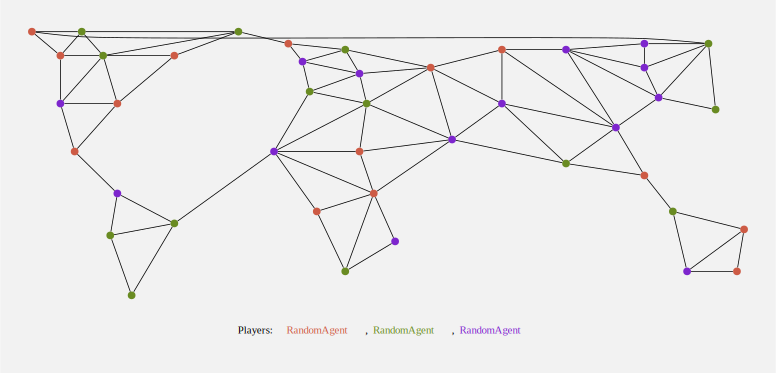
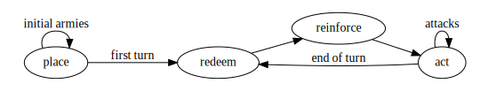

preem module
Preeminence is a game in which autonomous agents attempt world domination in turn based strategy, on a map that looks like this:

Get started now with our friendly tutorial. (And here are the intro slides.)
After the tutorial, we'd suggest browsing through Agent, Map, World, PlayerState and Game,
but we also have some tips & tricks for developing your agent.
Tips & tricks
Some hints for you in the pursuit of strategic excellence…
Develop methods interactively - the edit/test/debug loop you find yourself in might sometimes
feel a bit cumbersome. You'll probably find that one tricky thing is getting a PlayerState instance
with the right data in for you to test.
Using Game.start(), Game.next_event(), and the fact that you can easily edit the world (note: please
don't do this "in production" - that would be cheating), you can get an appropriate state to work with:
# In an IPython cell...
random.seed(100)
game = P.Game.start(P.Map.load('maps/mini.json'), [MyAgent(), RandomAgent()])
event = game.next_event(method='act', player_index=0)
state = event.state
state.world.owners = [0, 1, 0, 0, 0, 0]
state.world.armies = [2, 2, 2, 2, 10, 2]
IPython.display.display(event.state.world)
# try implementing your agent's act() method using "state"
WARNING - if you copy your code from a cell into your agent class, be very careful to ensure all the variables come from the method args (it is very easy to use the wrong (global) state/armies/owners!)
Use the various available maps - you may find that mini (or even tiny3 or tiny4) are
good for implementing and debugging your agent (it is much easier to find which territories are which).
quad is great for quick tournaments & debugging, then classic should be the real test.
Use numpy & networkx to do the heavy lifting - although you can write an agent without going near
either, you may find they can make your code simpler, and faster. See
Map.adjacency_matrix and Map.to_graph, but
also note that you can wrap other info in arrays easily, for example:
# using plain Python
my_territory_mask = [owner == state.player_index for owner in state.map.owners]
# or (faster, more convenient)
owners = np.array(state.map.owners)
my_territory_mask = (owners == state.player_index)
React to other agents' strategies - if your agent has the brainpower, you may be interested in the
hidden gem inside World that is World.event_log, which contains the events
so far generated by all agents playing the game. Note that these events are deliberately incomplete -
details such as the agent instances themselves, and the cards owned by each agent are hidden.
Source code
"""Preeminence is a game in which autonomous agents attempt world domination in turn based strategy,
on a map that looks like this:

**Get started now with our friendly [tutorial](tutorial.html).** (And here are the
[intro slides](intro.slides.html).)
After the tutorial, we'd suggest browsing through `Agent`, `Map`, `World`, `PlayerState` and `Game`,
but we also have some tips & tricks for developing your agent.
## Tips & tricks
_Some hints for you in the pursuit of strategic excellence..._
**Develop methods interactively** - the edit/test/debug loop you find yourself in might sometimes
feel a bit cumbersome. You'll probably find that one tricky thing is getting a `PlayerState` instance
with the right data in for you to test.
Using `Game.start()`, `Game.next_event()`, and the fact that you can easily edit the world _(note: please
don't do this "in production" - that would be cheating)_, you can get an appropriate `state` to work with:
```python
# In an IPython cell...
random.seed(100)
game = P.Game.start(P.Map.load('maps/mini.json'), [MyAgent(), RandomAgent()])
event = game.next_event(method='act', player_index=0)
state = event.state
state.world.owners = [0, 1, 0, 0, 0, 0]
state.world.armies = [2, 2, 2, 2, 10, 2]
IPython.display.display(event.state.world)
# try implementing your agent's act() method using "state"
```
_**WARNING - if you copy your code from a cell into your agent class, be very careful to ensure all the
variables come from the method args (it is very easy to use the wrong (global) state/armies/owners!)**_
**Use the various available maps** - you may find that `mini` (or even `tiny3` or `tiny4`) are
good for implementing and debugging your agent (it is much easier to find which territories are which).
`quad` is great for quick tournaments & debugging, then `classic` should be the real test.
**Use numpy & networkx to do the heavy lifting** - although you can write an agent without going near
either, you may find they can make your code simpler, and faster. See
[`Map.adjacency_matrix`](#preem.Map.adjacency_matrix) and [`Map.to_graph`](#preem.Map.to_graph), but
also note that you can wrap other info in arrays easily, for example:
```python
# using plain Python
my_territory_mask = [owner == state.player_index for owner in state.map.owners]
# or (faster, more convenient)
owners = np.array(state.map.owners)
my_territory_mask = (owners == state.player_index)
```
**React to other agents' strategies** - if your agent has the brainpower, you may be interested in the
hidden gem inside World that is [`World.event_log`](#preem.World.event_log), which contains the events
so far generated by all agents playing the game. Note that these events are deliberately incomplete -
details such as the agent instances themselves, and the cards owned by each agent are hidden.
"""
import collections
import json
import random
import sys
import math
import html
import multiprocessing
import os
import time
import subprocess
import tempfile
import tabulate
import itertools as it
import networkx as nx
import numpy as np
class _View:
"""Helpers for viewing core data."""
@staticmethod
def _clip_string(s, max_length):
if max_length < len(s):
h = (max_length - 2) // 2
return '{}..{}'.format(s[:h], s[-h:])
return s
@classmethod
def _tooltip(cls, index, map_, world=None, reinforcements=None):
tip = '#{}: {}'.format(index, map_.territory_names[index])
if world is not None:
owner = world.owners[index]
tip += '\n#{}: {}'.format(owner,
cls._clip_string(world.player_names[owner], 32)
if owner is not None else None)
tip += '\n{} armies'.format(world.armies[index])
if reinforcements is not None:
tip += '\n+{} reinforcements'.format(reinforcements)
return tip
@classmethod
def map_to_graph(cls, map_):
ratio = ((max(y for _, y in map_.layout) - min(y for _, y in map_.layout)) /
(max(x for x, _ in map_.layout) - min(x for x, _ in map_.layout)))
size = 3 + 1.2 * map_.n_territories ** .5
g = nx.Graph(size=size, ratio=ratio, splines=True, fixedsize=True,
bgcolor='gray95', pad=.5, labelfloat=True)
g.add_nodes_from((i, dict(tooltip=cls._tooltip(i, map_),
pos='{},{}!'.format(size * x, size * y),
shape='circle',
label='',
style='filled',
color='black',
width=.2,
penwidth=0,
fixedsize=True))
for i, (x, y) in enumerate(map_.layout))
g.add_edges_from(((a, b) for a, bb in enumerate(map_.edges) for b in bb if a < b))
return g
@classmethod
def world_to_graph(cls, world, player_index=None, neutral_color='gray40',
colors=('coral3', 'olivedrab4', 'purple3', 'orange3', 'cyan4', 'sienna4')):
g = cls.map_to_graph(world.map)
if world.has_neutral:
colors = colors[:2] + (neutral_color,)
for idx in range(world.map.n_territories):
owner = world.owners[idx]
g.nodes[idx].update(
fillcolor=colors[owner] if owner is not None else 'black',
width=min(.5, .1 * ((world.armies[idx] + 1) ** .5)),
tooltip=cls._tooltip(idx, world.map, world),
)
g.add_node('legend',
pos='{},0!'.format(g.graph['size'] * .5),
shape='none',
label='<Players: {}>'.format(', '.join(
'<FONT COLOR="{}">{}</FONT>'.format(
colors[idx],
('<U>{}</U>' if idx == player_index else '{}').format(
html.escape(cls._clip_string(name, 12))))
for idx, name in enumerate(world.player_names)
)))
return g
@classmethod
def event_to_graph(cls, event, **kwargs):
g = cls.world_to_graph(event.state.world, player_index=event.state.player_index, **kwargs)
if event.method == 'place':
g.nodes[event.result].update(color='red2', penwidth=4)
if event.method == 'reinforce':
for idx, count in event.result.items():
g.nodes[idx].update(color='red2', penwidth=4,
tooltip=cls._tooltip(idx, event.state.map, event.state.world, reinforcements=count))
if event.method == 'act':
action = event.result
if isinstance(action, (Attack, Move)):
g.edges[event.result.from_, event.result.to].update(
color='red', fontcolor='red2', style='solid' if isinstance(action, Attack) else 'dashed',
penwidth=4,
dir='forward' if event.result.from_ < event.result.to else 'back',
label='{} '.format(action.count),
tooltip='{}({})'.format(action.__class__.__name__, action.count),
fontsize='18.0', fontname='bold')
return g
@staticmethod
def simple_frame_time(event, place_time=0.25, reinforce_time=1, act_time=1, end_time=1):
"""Return the frame time for an `Event` (or `World` for the last frame)."""
if isinstance(event, World):
return end_time
if event.method == 'place':
return place_time
elif event.method == 'reinforce':
return reinforce_time
elif event.method == 'act' and event.result is not None:
return act_time
# skips redeem, act(None), as these aren't visible on the map
class _Renderer:
def __init__(self, max_processes, poll_interval):
self.max_processes = max_processes
self.poll_interval = poll_interval
self.processes = []
def __call__(self, command):
while len(self.processes) >= self.max_processes:
time.sleep(self.poll_interval)
self.processes = [p for p in self.processes if p.poll() is None]
self.processes.append(subprocess.Popen(command, shell=True))
def __enter__(self):
return self
def __exit__(self, exc_type, exc_value, exc_tb):
for p in self.processes:
p.wait()
self.processes = []
@classmethod
def game_to_video(cls, game, out_path,
frame_time=None,
max_processes=2 * multiprocessing.cpu_count(),
poll_interval=0.01, dpi=72, fps=4):
if frame_time is None:
frame_time = cls.simple_frame_time
dot_path = '{dir}/{n:04d}.dot'
render_command = 'dot -Kneato -Tpng -Gdpi={dpi} -o{dir}/{n:04d}.png {dir}/{n:04d}.dot'
with tempfile.TemporaryDirectory() as dir:
with open(os.path.join(dir, 'playlist.txt'), 'w') as playlist, \
cls._Renderer(max_processes, poll_interval) as render:
frame_count = 0
for event in game:
ftime = frame_time(event)
if ftime:
# write to dot, then kick off conversion in a nonblocking subprocess
g = nx.nx_agraph.to_agraph(cls.event_to_graph(event))
g.write(path=dot_path.format(dir=dir, n=frame_count))
render(render_command.format(dpi=dpi, dir=dir, n=frame_count))
playlist.write('file {n:04d}.png\nduration {time}\n'.format(n=frame_count, time=ftime))
frame_count += 1
# final "game over" frame
g = nx.nx_agraph.to_agraph(cls.world_to_graph(
game.world, player_index=game.result.outright_winner))
g.write(path=dot_path.format(dir=dir, n=frame_count))
render(render_command.format(dpi=dpi, dir=dir, n=frame_count))
playlist.write('file {n:04d}.png\nduration {time}\nfile {n:04d}.png\n'.format(
n=frame_count, time=frame_time(game.world)))
subprocess.check_call(
'ffmpeg -y -f concat -i {playlist}'
' -r {fps} -pix_fmt yuv420p'
' -vf "pad=ceil(iw/2)*2:ceil(ih/2)*2"'
' {out}'.format(
playlist=playlist.name, out=out_path, fps=fps), shell=True)
import IPython.display
return IPython.display.Video(out_path)
@staticmethod
def to_svg(g):
return nx.nx_agraph.to_agraph(g).draw(prog='neato', format='svg').decode('utf8')
# Basic data ################################################################################
class Map:
"""Unchanging data about the topology & behaviour of the map being played."""
def __init__(self, name, continent_names, continent_values,
territory_names, continents, edges,
initial_armies, max_turns, layout):
self.name = name
"""`str` -- human-readable name for the map"""
self.continent_names = continent_names
"""`[str]` -- indexed by continent ID, human-readable names for the continents"""
self.continent_values = continent_values
"""`[int]` -- indexed by continent ID, for the number of reinforcements
credited to an outright owner of that continent"""
self.territory_names = territory_names
"""`[str]` -- indexed by territory ID, human-readable names for the territories"""
self.continents = continents
"""`[int]` -- indexed by territory ID, for the continent ID of that territory"""
self.edges = edges
"""`[set(int)]` -- indexed by territory ID, to a set of connected territory IDs"""
self.initial_armies = initial_armies
"""`{int: int}` -- maps number of players to initial number of armies to place"""
self.max_turns = max_turns
"""`int` -- maximum number of turns allowed in a game, before declaring a tie"""
self.layout = layout
"""`[(float, float)] or None` -- indexed by territory ID, (x,y) positions"""
def __repr__(self):
return 'Map[name={}, territories={}, continents={}]'.format(
self.name, self.n_territories, self.n_continents)
def _repr_svg_(self):
return _View.to_svg(self.to_graph)
@property
def to_graph(self):
"""`networkx.Graph` -- an undirected graph of the map, giving access to
[networkx](https://networkx.github.io/documentation/stable/index.html) graph algorithms.
Note that a new copy of the graph is created each time, so the calling code may freely
modify it.
"""
return _View.map_to_graph(self)
@property
def adjacency_matrix(self):
"""Convert the graphs `edge set` into an adjacency matix.
**`returns`** -- `np.array(N x N, dtype=bool)` -- an adjacency matrix (i.e. `m[2,3] is True`
means that territories 2 & 3 are connected (note that as the graph is
undirected, the adjacency matrix is symmetric (`m[i, j] == m[j, i]`).
"""
adj = np.zeros((self.n_territories, self.n_territories), dtype=np.bool)
for row, edges in enumerate(self.edges):
adj[row, list(edges)] = True
assert (adj.T == adj).all()
return adj
@property
def n_territories(self):
"""`int` -- total number of territories (so the IDs are `range(n_territories)`)"""
return len(self.territory_names)
@property
def n_continents(self):
"""`int` -- total number of continents (so the IDs are `range(n_continents)`)"""
return len(self.continent_names)
@property
def max_players(self):
"""`int` -- maximum number of players on this map"""
return max(self.initial_armies.keys())
@classmethod
def load_file(cls, f):
"""Load from a file object, which should contain a JSON world spec."""
d = json.load(f)
continent_names, continent_values = zip(*d['continents'])
territory_names, continents_, edges_ = zip(*d['territories'])
initial_armies = {idx + 2: count for idx, count in enumerate(d['initial_armies'])}
layout = [tuple(d['layout'].get(t, [])) for t in territory_names] if 'layout' in d else None # TODO
return cls(name=d['name'],
continent_names=continent_names,
continent_values=continent_values,
territory_names=territory_names,
continents=tuple(continent_names.index(t) for t in continents_),
edges=tuple(set(territory_names.index(i) for i in t) for t in edges_),
initial_armies=initial_armies,
max_turns=d['max_turns'],
layout=layout)
@classmethod
def load(cls, path):
"""Load a map from a local path.
`path` -- `str` -- local file path (e.g. `"maps/classic.json"`)
**`returns`** -- `Map`
"""
with open(path, 'r') as f:
return cls.load_file(f)
class World:
"""On top of a `Map`, World provides the visible mutable state of the `Game` in progress."""
def __init__(self, map, player_names, has_neutral):
self.map = map
"""`Map` -- fixed information about the map being played"""
self.player_names = player_names
"""`[str]` -- indexed by player_index, human-readable names of the players"""
self.has_neutral = has_neutral
"""`bool` -- if True, player with ID `n_players - 1` is the neutral player in a 1v1 game"""
self.owners = [None for _ in range(map.n_territories)]
"""`[int]` -- indexed by territory ID, player index of the owning player for each territory"""
self.armies = [0 for _ in range(map.n_territories)]
"""`[int]` -- indexed by territory ID, number of armies on each territory"""
self.n_cards = [0 for _ in range(len(player_names))]
"""`[int]` -- indexed by player_index, number of cards in possession of each player"""
self.turn = 0
"""`int` -- turn counter"""
self.sets_redeemed = 0
"""`int` -- how many sets have been redeemed so far? (this determines the
reinforcements value of the next set)"""
self.eliminated_players = []
"""`[int]` -- list of player indices who have been eliminated from the
game, in order of elimination (does not include neutral)"""
self.event_log = []
"""`[Event]` -- list of `Event`s that have been generated so far - i.e. the responses &
actions of every other agent. Note that in this log the `agent` has been replaced with
`repr(agent)`, and the `state` has been replaced with `state.player_index` (to prevent
private information leakage)."""
def __repr__(self):
return 'World[map={}, players={}]'.format(self.map, self.n_players)
def _repr_svg_(self):
return _View.to_svg(_View.world_to_graph(self))
def _add_event(self, event):
self.event_log.append(event._replace(agent=repr(event.agent),
state=event.state.player_index))
return event
@property
def n_players(self):
"""Number of players, including neutral if applicable.
**`returns`** -- `int` -- number of players in the game
"""
return len(self.player_names)
def count_territories(self, owner):
"""How many territories are owned by `owner`?
**`returns`** -- `int` -- number of territories owned
"""
return sum(territory_owner == owner for territory_owner in self.owners)
def territories_belonging_to(self, owner):
"""Get a list of territory IDs belonging to `owner`.
**`returns`** -- `[int]` -- list of territory IDs where `world.owners[id] == owner`
"""
return [idx for idx, iowner in enumerate(self.owners) if iowner == owner]
@property
def next_set_value(self):
"""Get the value of the next set to be declared.
**`returns`** -- `int` -- number of bonus armies to be received when redeeming the next set
"""
return value_of_set(self.sets_redeemed)
Card = collections.namedtuple('Card', ('symbol', 'territory'))
Card.__doc__ = """A card which can be redeemed as part of a set of 3 in return for armies.
Each turn an player may earn a single card by capturing at least one territory.
If a player knocks out another, the victor claims all of the defeated player's cards.
"""
Card.symbol.__doc__ = """`int` -- ID of a set-matching symbol on the card (see `is_matching_set()`)."""
Card.territory.__doc__ = """`int` -- territory ID for awarding additional bonus armies."""
class PlayerState:
"""The current world's state, as viewed by a specific player."""
def __init__(self, world, player_index, cards=[]):
self.world = world
"""`World` -- the world's visible state"""
self.player_index = player_index
"""`int` -- ID of this player in the wider world, i.e.
if `world.owners[4] == player_index`, then this player owns territory `4`"""
self.cards = cards.copy()
"""`[Card]` -- list of `Card`s owned by the player
Note: this is private, but `World.n_cards` is not.
"""
self.world.n_cards[self.player_index] = len(self.cards)
def _add_cards(self, cards_to_add):
"""Add cards to this player (e.g. earning by attacking, or conquering)."""
self.cards += cards_to_add
self.world.n_cards[self.player_index] = len(self.cards)
def _remove_cards(self, cards_to_remove):
"""Remove cards from this player (e.g. after redeeming a set)."""
for card in cards_to_remove:
self.cards.remove(card)
self.world.n_cards[self.player_index] = len(self.cards)
def __repr__(self):
my_territories = self.my_territories
my_armies = sum(self.world.armies[t] for t in my_territories)
return 'PlayerState[index={}, territories={}/{}, armies={}/{}, cards={}]'.format(
self.player_index,
len(my_territories), self.map.n_territories,
my_armies, sum(self.world.armies),
len(self.cards),
)
def _repr_svg_(self):
return _View.to_svg(_View.world_to_graph(self.world, player_index=self.player_index))
@property
def map(self):
"""`Map` -- shortcut to get to the map"""
return self.world.map
@property
def my_territories(self):
"""`[int]` -- a list of all territory IDs which currently belong to this player"""
return self.world.territories_belonging_to(self.player_index)
def is_matching_set(cards):
"""Determine if the set of 3 `Card`s defines a valid matching set (that can be redeemed).
A set is matching if the symbols on the 3 cards are either all the same or all different.
(e.g. `[1, 1, 1]` matches, `[1, 0, 1]` does not, but `[0, 1, 2]` is a matching set.
`cards` -- `[Card]` -- cards to check
**`returns`** -- `bool` -- True if the cards match
"""
symbols = set(card.symbol for card in cards)
return len(cards) == 3 and (len(symbols) == 1 or len(symbols) == len(cards))
def get_matching_sets(cards):
"""List all allowed matching sets (that can be redeemed) from your `Card`s.
A set is matching if the symbols on the 3 cards are either all the same or all different.
(e.g. `[1, 1, 1]` matches, `[1, 0, 1]` does not, but `[0, 1, 2]` is a matching set.
`cards` -- `[Card]` -- cards available to redeem
**`returns`** -- `[[Card]]` -- all valid sets of 3 cards
"""
return [candidate
for candidate in it.combinations(cards, 3)
if is_matching_set(candidate)]
def count_reinforcements(n_territories):
"""How many territory-generated reinforcements would be awarded, with this many territories?
Note that your total number of reinforcements will also include armies from redeemed sets
and from any fully owned continents.
`n_territories` -- `int` -- number of territories owned by the player
**`returns`** -- `int` -- number of reinforcement armies awarded from basic territory count
"""
return max(3, n_territories // 3)
def value_of_set(sets_redeemed):
"""How many reinforcements will be generated from the next set to be redeemed?
`sets_redeemed` -- `int` -- number of sets redeemed so far
**`returns`** -- `int` -- number of reinforcement armies awarded for the next set
"""
if sets_redeemed <= 4:
return 4 + 2 * sets_redeemed
return 5 * sets_redeemed - 10
def get_all_possible_attacks(state):
"""Generate all possible `Attack` actions that the current player could make.
`state` -- `PlayerState` -- current player state
**`returns`** -- `[Attack]` -- all valid attacks (with `count` set to the maximum allowed count
e.g. if `Attack(2, 5, count=4)` is returned, then trivially
`Attack(2, 5, count=3)` is also allowed)
"""
# not the tidiest way to write this, but it's a performance hotpot, so optimized
player_index = state.player_index
edges, owners, armies = state.map.edges, state.world.owners, state.world.armies
return [Attack(src, dest, armies[src] - 1)
for src in (src for src in range(state.map.n_territories)
if owners[src] == player_index
and armies[src] > 1)
for dest in edges[src]
if owners[dest] != player_index]
def get_all_possible_moves(state):
"""Generate all possible `Move` actions that the current player could make.
`state` -- `PlayerState` -- current player state
**`returns`** -- `[Move]` -- all valid attacks (with `count` set to the maximum allowed count
e.g. if `Move(2, 5, count=4)` is returned, then trivially
`Move(2, 5, count=3)` is also allowed)
"""
# not the tidiest way to write this, but it's a performance hotpot, so optimized
player_index = state.player_index
edges, owners, armies = state.map.edges, state.world.owners, state.world.armies
return [Move(src, dest, armies[src] - 1)
for src in (src for src in range(state.map.n_territories)
if owners[src] == player_index
and armies[src] > 1)
for dest in edges[src]
if owners[dest] == player_index]
ATTACKING_ODDS = {
(1, 1): (((0, 1), (1, 0)),
(15/36, 21/36)),
(2, 1): (((0, 1), (1, 0)),
(125/216, 91/216)),
(3, 1): (((0, 1), (1, 0)),
(855/1296, 441/1296)),
(1, 2): (((0, 1), (1, 0)),
(55/216, 161/216)),
(2, 2): (((0, 2), (1, 1), (2, 0)),
(295/1296, 420/1296, 581/1296)),
(3, 2): (((0, 2), (1, 1), (2, 0)),
(2890/7776, 2611/7776, 2275/7776)),
}
"""Look up a list of outcomes and probabilities for the given combat.
outcomes, probabilities = ATTACKING_ODDS[(attack_dice, defend_dice)]
`attack_dice` -- `int` -- number of attacking dice thrown (1-3)
`defend_dice` -- `int` -- number of defending dice thrown (1-2)
`outcomes` -- `[(int, int)]` -- (attacker_losses, defender_losses)
`probabilities` -- `[float]` -- probability of each outcome
"""
SET_MATCHING_TERRITORY_BONUS = 2
"""The number of bonus armies awarded for owning the territory on a card of a redeemed set.
This is in addition to the general bonus armies for redeeming a set, and these bonus armies
are placed directly on the indicated territory.
"""
Event = collections.namedtuple('Event', ('agent', 'state', 'method', 'args', 'result'))
Event.__doc__ = """A decision made by an agent in the game.
Events are generated when iterating through a `Game`, for example:
```python
for event in game:
print(event)
```
Events are generated for each method call on each `Agent` instance in the game (i.e. every time
any agent is asked to make a decision.)
Each event is emitted by the game before it has been executed, so `state` is given as it
is when the `agent` made the decision (e.g. if result is an `Attack`, then `state` is the `PlayerState`
before the attack is resolved.
"""
Event.agent.__doc__ = """`Agent` -- instance taking the action
Note - in `World.event_log`, this is hidden (replaced with `repr(agent)`).
"""
Event.state.__doc__ = """`PlayerState` -- state as the action is issued
**WARNING - Beware of storing this field while continuing to play out the `Game`: the mutable data
contained will be updated as the game progresses.**
Note - in `World.event_log`, this is hidden (replaced with `state.player_index`).
"""
Event.method.__doc__ = """`str` -- name of the method called on `agent` (e.g. `"act"` or `"reinforce"`)"""
Event.args.__doc__ = """`dict` -- containing any other arguments passed to `agent.method`"""
Event.result.__doc__ = """`*` -- result returned by the agent (see `Agent` methods)
(e.g. `Attack`, `Move`, `dict`, `int`, `None`)
"""
def _event_repr_svg_(self):
return _View.to_svg(_View.event_to_graph(self))
Event._repr_svg_ = _event_repr_svg_ # NOQA
# Agent ################################################################################
Attack = collections.namedtuple('Attack', ('from_', 'to', 'count'))
Attack.__doc__ = """Action to launch an attack from your territory `from_` to an enemy territory `to`.
You can execute as many attacks as you like during your turn, therefore after each battle outcome
(in which you may defeat or lose up to two armies), your agent will be asked again to `Agent.act()` until it
returns `Move` or `None` (after which no more attacks are allowed until the next turn).
"""
Attack.from_.__doc__ = """`int` -- territory ID to launch the attack from.
**Requirements** - the territory must be owned by the player (`world.owners[a.from_] == state.player_index`)
and must contain at least `a.count+1` armies.
"""
Attack.to.__doc__ = """`int` -- territory ID to launch the attack against.
**Requirements** - the territory must not be owned by the player (`world.owners[a.from_] != state.player_index`)
and must be accessible from the `a.from_` territory (`a.to in map.edges[a.from_]`).
"""
Attack.count.__doc__ = """`int` -- number of armies to attack with, then to move into `from_` in case of victory.
**Requirements** - must be greater than zero
"""
Move = collections.namedtuple('Move', ('from_', 'to', 'count'))
Move.__doc__ = """Action to move troops between two adjacent territories of yours (`from_->to`).
Note that this ends your turn.
"""
Move.from_.__doc__ = """`int` -- territory ID to move armies from.
**Requirements** - the territory must be owned by the player (`world.owners[m.from_] == state.player_index`)
and must contain at least `m.count+1` armies.
"""
Move.to.__doc__ = """`int` -- territory ID to move armies to.
**Requirements** - the territory must be owned by the player (`world.owners[m.from_] == state.player_index`)
and must be accessible from the `m.from_` territory (`m.to in map.edges[m.from_]`).
"""
Move.count.__doc__ = """`int` -- number of armies to move.
**Requirements** - must be greater than zero
"""
class Agent:
"""Autonomous agent for playing the game (extend this to create your strategic agent).
To implement an Agent, you must subclass `Agent`, implementing the abstract methods `Agent.place`,
`Agent.redeem`, `Agent.reinforce` and `Agent.act`. These methods are called during a game of Preeminence
in the following pattern:

- The game sets up the map, assigns starting territories randomly to each player,
- then calls `start_game` (optional override) to allow the Agent to set itself up.
- Game calls `place` repeatedly (for each player in turn) to place a single army on an owned territory,
until enough initial armies have been placed.
- For each turn, game:
- calls `redeem` to decide if any cards should be declared for bonus armies,
- calls `reinforce` to place multiple armies on one or more owned territories,
- calls `act` repeatedly, until it returns a turn-ending action (such as a move).
"""
def __repr__(self):
"""Simplified string identifying the agent."""
return '{}@{:08x}'.format(type(self).__name__, id(self) & 0xffffffff)
def start_game(self, state):
"""(Optional override) called once before the start of a game, allowing the agent to prepare.
This is called after initial territories have been allocated, but before any agent has placed
armies on the map. In particular, any information in `state.map` (a `Map`) will stay the same
until the next game (and therefore the next `start_game`).
`state` -- `PlayerState`
"""
pass
def place(self, state):
"""Place a single army on one of your territories in the world (during the initial placement phase).
This is similar to `Agent.reinforce()`, but is called multiple times before the first turn
of the game, in order to allocate your initial set of armies to the map, and is not called during
the main turn-based phase.
**Requirements** - the method must return:
- a valid territory index (in the range `[0..state.map.n_territories]`)
- an owned (friendly) territory index (`state.world.owners[index] == state.player_index`)
`state` -- `PlayerState`
**`returns`** -- `int` -- territory to place the new army on
"""
raise NotImplementedError
def redeem(self, state):
"""Decide whether to redeem any sets of cards you have, called before `reinforce`.
The set being redeemed has reinforcement value (the number of extra armies received on the
next `reinforce`) equal to `World.next_set_value()`. Sets also provide an additional bonus
of 2 armies immediately placed on each `Card.territory` if owned by the current player.
The reinforcement value (but not additional territory bonus) of sets increases based on
number of sets declared (see `value_of_set()` for details).
Note that this method may not be called every turn (e.g. if you have fewer than 3 cards).
Implementors may find `get_matching_sets()` useful.
**Requirements** - the method must:
- either return 3 of the cards from `state.cards`, or `None`
- if returning cards, they must match (`is_matching_set(cards) is True`)
- always return a set of cards if `len(state.cards) >= 5` (in which case you will always
have at least one valid set in `state.cards`)
`state` -- `PlayerState`
**`returns`** -- `[Card] or None` -- set of cards to redeem (a subset of `state.cards`)
"""
raise NotImplementedError
def reinforce(self, state, count):
"""Place multiple armies on owned territories before any `act` calls within a turn.
The number of reinforcements received is the sum of three contributions:
- _Territory armies_ are calculated based on the number of territories you control
(see `World.count_territories`, `count_reinforcements()`), you will always receive
at least 3.
- _Continent armies_ are awarded for every complete continent that you own. Compare
`Map.continents` and `World.owners` to test if a continent is owned, and see
`Map.continent_values` to see how many armies each continent is worth.
- _Set armies_ are awarded when your agent chose to redeem a set (see `Agent.redeem`).
_Note that this method is called once each turn before `Agent.act()`, so could be used to
pre-plan multiple actions._
**Requirements** - the method must:
- return a dictionary from an owned territory ID to army count
(`{index: reinforce_count}`, where `state.world.owners[index] == state.player_index`)
- ensure the sum of `reinforce_count` exactly equals the parameter `count`
- ensure no negative `reinforce_count`s
`state` -- `PlayerState`
`count` -- `int` -- number of armies available
**`returns`** -- `{int: int}` -- dict mapping territory to number of armies to place
"""
raise NotImplementedError
def act(self, state, earned_card):
"""Take an action (attack, move, or end turn) as part of a turn.
This method is called multiple times, until it returns a `Move` or `None` action, as the agent
is permitted to make any number of `Attack` actions.
**Requirements** - the method must return **either**:
- `Attack` -- see class for requirements
- `Move` -- see class for requirements
- `None`
`state` -- `PlayerState`
`earned_card` -- `bool` -- if True, your card has been earned this turn
**`returns`** -- `Attack or Move or None` -- action to take (see `Attack`, `Move`)
"""
raise NotImplementedError
class _ValidatingAgent(Agent):
"""Wrap an Agent, with checks that throw errors if the wrapped agent tries to do something invalid."""
def __init__(self, agent):
self.agent = agent
def _error(self, message, *fmt_args):
return ValueError('Agent {}: {}'.format(self.agent, message.format(*fmt_args)))
def place(self, state):
placement = self.agent.place(state)
if not (0 <= placement < state.map.n_territories):
raise self._error('army placement out of bounds (at: {}, expected: [0..{}])',
placement, state.map.n_territories - 1)
if state.world.owners[placement] != state.player_index:
raise self._error('tried to place an army on an enemy territory (at: {}, owner: {})',
placement, state.world.owners[placement])
return placement
def redeem(self, state):
set_ = self.agent.redeem(state)
if set_ and not all(card in state.cards for card in set_):
raise self._error('does not own all redeemed cards {}', set_)
if set_ and not is_matching_set(set_):
raise self._error('tried to redeem an invalid set {}', set_)
if (not set_) and 5 <= len(state.cards):
raise self._error('with {} (>= 5) cards failed to redeem a set', len(state.cards))
return set_
def reinforce(self, state, count):
destinations = self.agent.reinforce(state, count)
if any(n < 0 for n in destinations.values()):
raise self._error('tried to deploy a negative number of reinforcements ({})',
[n for n in destinations.values() if n < 0])
if sum(destinations.values()) != count:
raise self._error('deployed an incorrect number of reinforcements ({} of {})',
sum(destinations.values()), count)
if any(state.world.owners[t] != state.player_index for t in destinations):
raise self._error('attempted to reinforce enemy territories {}',
[t for t in destinations if state.world.owners[t] != state.player_index])
return destinations
def act(self, state, earned_card):
action = self.agent.act(state, earned_card)
if action is not None: # Attack or Move
if action.count <= 0:
raise self._error('cannot attack/move with {} armies (<= 0) for {}',
action.count, action)
if state.world.armies[action.from_] <= action.count:
raise self._error('insufficient armies to attack/move ({}) for {}',
state.world.armies[action.from_], action)
if action.to not in state.map.edges[action.from_]:
raise self._error('territories are not connected for {}', action)
if state.world.owners[action.from_] != state.player_index:
raise self._error('attempted to attack/move from an enemy territory with {}', action)
if isinstance(action, Move) and state.world.owners[action.to] != state.player_index:
raise self._error('attempted to move to an enemy territory with {}', action)
if isinstance(action, Attack) and state.world.owners[action.to] == state.player_index:
raise self._error('attempted to attack your own territory with {}', action)
return action
class FallbackAgent(Agent):
"""Wrap an Agent, with auto-fallback if the wrapped agent tries to do something invalid.
If you need to patch over a rare bug in your agent, this may be useful, but **beware**: as
FallbackAgent overrides your agent's behaviour in the case of errors, debugging may be hard!
- When `Agent.place()` fails, makes a random placement.
- When `Agent.redeem()` fails, does nothing unless set redemption is required (in which case
makes a random redemption).
- When `Agent.reinforce()` fails, makes a random reinforcement onto a single territory.
- When `Agent.act()` fails, does nothing (ending the current turn).
"""
def __init__(self, agent, rand=random):
"""Create a fallback agent, warns & then fixes erroneous `Agent` responses.
`agent` -- `Agent` -- implementation to wrap
`rand` -- `random.RandomState` -- random generator to use for fallback behaviour
"""
self.agent = agent
self._validating_agent = _ValidatingAgent(agent)
self.rand = rand
def __str__(self):
return 'FallbackAgent({})'.format(self.agent)
def place(self, state):
try:
return self._validating_agent.place(state)
except ValueError as e:
sys.stderr.write('FallbackAgent Warning: {}\n'.format(e))
return self.rand.choice(state.my_territories)
def redeem(self, state):
try:
return self._validating_agent.redeem(state)
except ValueError as e:
sys.stderr.write('FallbackAgent Warning: {}\n'.format(e))
return (None
if len(state.cards) < 5 else
self.rand.choice(list(get_matching_sets(state.cards))))
def reinforce(self, state, count):
try:
return self._validating_agent.reinforce(state, count)
except ValueError as e:
sys.stderr.write('FallbackAgent Warning: {}\n'.format(e))
return {self.rand.choice(state.my_territories): count}
def act(self, state, earned_card):
try:
return self._validating_agent.act(state, earned_card)
except ValueError as e:
sys.stderr.write('FallbackAgent Warning: {}\n'.format(e))
return None
# Game ################################################################################
class _NeutralAgent(Agent):
"""A dummy agent for use in 2v2.
Only supports placing armies (cannot perform any other game actions).
"""
def __init__(self, rand):
self.rand = rand
def __repr__(self):
return 'Neutral'
def place(self, state):
"""Randomly reinforce one of the territories that has the fewest armies on it."""
territories = state.my_territories
min_armies = min(state.world.armies[t] for t in territories)
return self.rand.choice([t for t in territories if state.world.armies[t] == min_armies])
def _placement_phase(world, agents_and_states, rand):
"""Run the territory allocation & army placement phase of the game."""
placement_order = agents_and_states.copy()
rand.shuffle(placement_order)
empty_territories = list(range(world.map.n_territories))
rand.shuffle(empty_territories)
n_players = world.n_players - world.has_neutral
if world.map.max_players < n_players:
raise ValueError('Too many players for map "{}" ({}, max: {})'.format(
world.map.name, n_players, world.map.max_players))
start_game_called = False
for _ in range(world.map.initial_armies[world.n_players - world.has_neutral]):
for agent, state in placement_order:
if empty_territories:
placement = empty_territories.pop()
assert world.armies[placement] == 0
else:
if not start_game_called:
for a, s in placement_order:
a.start_game(s)
start_game_called = True
placement = _ValidatingAgent(agent).place(state)
yield world._add_event(Event(agent, state, 'place', {}, placement))
world.owners[placement] = state.player_index
world.armies[placement] += 1
class _Deck:
"""Manages the deck of cards, and any redeemed cards which may be reshuffled into the deck."""
def __init__(self, map_, rand):
# if the map has few territories, you might run out of cards, so we repeat the deck a few times
repetitions = math.ceil(map_.max_players * 5 / map_.n_territories)
self.deck = [Card(symbol, territory)
for symbol, territory in zip(it.cycle([0, 1, 2]),
(t for _ in range(repetitions)
for t in range(map_.n_territories)))]
self.redeemed = []
self.rand = rand
self.rand.shuffle(self.deck)
def draw(self):
if not self.deck:
if not self.redeemed:
raise ValueError('Not enough cards to go around!')
self.deck = self.redeemed
self.redeemed = []
self.rand.shuffle(self.deck)
return self.deck.pop()
def redeem(self, cards):
self.redeemed += cards
def _reinforce(agent, state, deck):
# 1. From territories
general_reinforcements = count_reinforcements(state.world.count_territories(state.player_index))
# 2. From continents
owned_continents = [True for _ in range(state.map.n_continents)]
for territory in range(state.map.n_territories):
if state.world.owners[territory] != state.player_index:
owned_continents[state.map.continents[territory]] = False
general_reinforcements += sum(owned * value
for owned, value in zip(owned_continents, state.map.continent_values))
# 3. From cards
if 3 <= len(state.cards):
set_ = _ValidatingAgent(agent).redeem(state)
yield state.world._add_event(Event(agent, state, 'redeem', {}, set_))
if set_:
for card in set_:
if state.world.owners[card.territory] == state.player_index:
state.world.armies[card.territory] += SET_MATCHING_TERRITORY_BONUS
deck.redeem(set_)
state._remove_cards(set_)
general_reinforcements += state.world.next_set_value
state.world.sets_redeemed += 1
# Apply reinforcements
destinations = _ValidatingAgent(agent).reinforce(state, count=general_reinforcements)
yield state.world._add_event(
Event(agent, state, 'reinforce', dict(count=general_reinforcements), destinations))
for territory, count in destinations.items():
state.world.armies[territory] += count
class _GameOverException(Exception):
pass
def _attack_and_move(agent, state, deck, agents_and_states, rand):
earned_card = False
while True:
action = _ValidatingAgent(agent).act(state, earned_card=earned_card)
yield state.world._add_event(Event(agent, state, 'act', dict(earned_card=earned_card), action))
if action is None:
break # end of turn
if isinstance(action, Move):
state.world.armies[action.from_] -= action.count
state.world.armies[action.to] += action.count
break # end of turn
assert isinstance(action, Attack)
attack_dice = min(3, action.count)
defend_dice = min(2, state.world.armies[action.to])
attack_losses, defend_losses = rand.choices(*ATTACKING_ODDS[(attack_dice, defend_dice)])[0]
state.world.armies[action.from_] -= attack_losses
state.world.armies[action.to] -= defend_losses
if state.world.armies[action.to] == 0:
assert attack_losses == 0, "shouldn't be possible to claim a territory while taking losses"
state.world.armies[action.from_] -= action.count
state.world.armies[action.to] = action.count
old_owner = state.world.owners[action.to]
state.world.owners[action.to] = state.player_index
earned_card = True
if state.world.count_territories(old_owner) == 0:
if old_owner < len(agents_and_states): # i.e. not Neutral
# The victor claims the cards from the eliminated player
old_owner_state = agents_and_states[old_owner][1]
cards_to_transfer = old_owner_state.cards.copy()
state._add_cards(cards_to_transfer)
old_owner_state._remove_cards(cards_to_transfer)
# Eliminate & test for game over
state.world.eliminated_players.append(old_owner)
if len(state.world.eliminated_players) == len(agents_and_states) - 1:
raise _GameOverException
if earned_card:
state._add_cards([deck.draw()])
def _main_phase(world, agents_and_states, rand):
turn_order = agents_and_states.copy()
rand.shuffle(turn_order)
deck = _Deck(world.map, rand)
try:
for turn in range(world.map.max_turns):
world.turn = turn
for agent, state in turn_order:
if state.player_index not in world.eliminated_players:
yield from _reinforce(agent, state, deck)
yield from _attack_and_move(agent, state, deck, agents_and_states, rand)
except _GameOverException:
pass
class GameResult:
"""The outcome of a single game."""
__slots__ = ('winners', 'eliminated', 'player_names')
def __init__(self, winners, eliminated, player_names):
self.winners = winners
"""`{int}` -- set of player IDs of game winners.
This could be multiple players (in the case of a turn-limit tie).
"""
self.eliminated = eliminated
"""`[int]` -- eliminated player IDs listed in order.
(i.e. `eliminated[0]` = knocked out first).
"""
self.player_names = player_names
"""`[str]` -- friendly names for the players."""
@staticmethod
def _name(player_names, player_index):
return '#{index}:{name}'.format(index=player_index, name=player_names[player_index])
def __repr__(self):
return 'GameResult(winners={{{winners}}}, eliminated=[{eliminated}])'.format(
winners=', '.join(self._name(self.player_names, winner) for winner in self.winners),
eliminated=', '.join(self._name(self.player_names, eliminated) for eliminated in self.eliminated),
)
@property
def outright_winner(self):
"""Get the outright winner index (if there is one, otherwise `None`).
**`returns`** -- `int or None` -- player ID of winner, if there was a single winner
"""
return next(iter(self.winners)) if len(self.winners) == 1 else None
class Game:
"""Play, step through or watch a game of Preeminence.
To _play_ a game & get only the final outcome see `Game.play()` (see also `Game.watch()` for
rendering a video).
To _step through_ a game, use `Game.start()`, and use the fact that _Game is an iterator(`Event`)_,
for example:
```python
for event in Game.start(map, [agent_a, agent_b]):
if event.agent is agent_a and event.method == 'act':
print(event.state, event.result)
```
Some other useful ways of using Game as an iterator:
```python
event = next(game) # step through manually
event = game.next_event(method='reinforce', player_index=0) # find next matching action
```
"""
def __init__(self, world, agents_and_states, rand):
self.world = world
"""`World` -- containing this game"""
self.agents_and_states = agents_and_states
"""[(`Agent`, `PlayerState`)] -- paired agents and states (including neutral)"""
self.rand = rand
"""`random.RandomState`"""
self._iter = it.chain(_placement_phase(world, agents_and_states, rand=rand),
_main_phase(world,
agents_and_states[:-1] if world.has_neutral else agents_and_states,
rand=rand))
@property
def map(self):
"""`Map` -- shortcut to get to the map"""
return self.world.map
def __iter__(self):
return self
def __next__(self):
"""Advance the game to the next `Event`, and return it.
Note that the `Event` object contains data that will be modified by the game the when `next()` is
called again.
**`returns`** -- `Event` -- next event from the game (the same event with some redaction is in
`Game.world.event_log[-1]`).
"""
return next(self._iter)
def next_event(self, player_index=None, method=None, agent=None, predicate=None):
"""Advance the game to the next `Event` which matches various filters.
Each filter is combined with logical AND (so `next_event(player_index=1, method='act')`
reads _"next event from player 1 which is an act()"_.
`player_index` -- `int` -- an event generated from this player
`method` -- `str` -- the name of the `Agent` method that generated this event
`agent` -- `Agent` -- the agent instance that generated the event (an alternative to
using `player_index`
`predicate` -- `callable(Event)` -- an arbitrary predicate that returns True to
select a matching event
**`returns`** -- `Event` -- next matching event from the game
**`throws`** -- `StopIteration` -- a matching event wasn't found before the end of the game
"""
def _matches(event):
return ((player_index is None or event.state.player_index == player_index)
and (method is None or event.method == method)
and (agent is None or event.agent is agent)
and (predicate is None or predicate(event)))
return next(filter(_matches, self))
@property
def result(self):
"""Get the `GameResult` of a finished game.
Note that this still returns a result if the game is not finished (inevitably a tie).
"""
winners = set(range(len(self.agents_and_states) - self.world.has_neutral)) - set(self.world.eliminated_players)
return GameResult(winners, self.world.eliminated_players, self.world.player_names)
@classmethod
def start(cls, map, agents, rand=random):
"""Start a game of Preeminence.
This includes some handling for 1v1 matches - to introduce a _neutral_ agent, which places
armies on territories, but will never attack either player. Therefore the returned game may contain
an extra agent in `agents_and_states`.
`map` -- `Map`
`agents` -- `[Agent]` -- `Agent` instances who are playing the game
**`returns`** -- `Game` -- running game (iterate over it to watch it progress)
"""
has_neutral = len(agents) == 2
agents_with_neutral = (list(agents) + [_NeutralAgent(rand)]) if has_neutral else agents
world = World(map, [str(agent) for agent in agents_with_neutral], has_neutral=has_neutral)
agents_and_states = [(agent, PlayerState(world, idx)) for idx, agent in enumerate(agents_with_neutral)]
return cls(world, agents_and_states, rand=rand)
@classmethod
def watch(cls, map, agents, video_path, rand=random, **video_args):
"""Watch a full game of Preeminence, rendering to and returning a video.
`map` -- `Map`
`agents` -- `[Agent]` -- `Agent` instances who are playing the game
`video_path` -- `str` -- file path to write out a video rendering of the game
`video_args` -- arguments to pass to the video renderer; valid arguments aree:
- `fps=4` -- frames per second
- `dpi=72` -- set resolution (therefore overall size of rendered video)
- `max_processes=8` -- number of processes to use to render frames
**`returns`** -- `IPython.display.Video` -- IPython can render this to watch the video inline
"""
game = cls.start(map, agents, rand=rand)
return _View.game_to_video(game, video_path, **video_args)
@classmethod
def play(cls, map, agents, rand=random):
"""Play a full game of Preeminence (without watching what goes on), and return the outcome.
`map` -- `Map`
`agents` -- `[Agent]` -- `Agent` instances who are playing the game
**`returns`** -- `GameResult` -- outcome of the game (note: you may then find it simplest to
use `GameResult.outright_winner`)
"""
game = cls.start(map, agents, rand=rand)
for _ in game:
pass # simply exhaust the iterator (as we're not interested in watching the game!)
return game.result
class TournamentResult:
"""Represents the outcome of a tournament, including individual game results.
In the high-level stats, ties count as fractional wins (e.g. if an agent has two two-way ties,
two wins, no losses, the win rate is 75%).
"""
def __init__(self, player_names, games):
self.player_names = player_names
"""`[str]` -- list of player names that participated"""
self.games = games
"""`[GameResult]` -- list of `GameResult` for each game played in the tournament"""
def __repr__(self):
return 'TournamentResult({})'.format(
', '.join('{} ({:.1%})'.format(GameResult._name(self.player_names, idx), win_rate or 0)
for idx, _, win_rate in self.ranked_players))
def _repr_html_(self):
return tabulate.tabulate(self.ranked_players,
tablefmt='html',
headers=['player index', 'name', 'win rate'],
floatfmt='.1%')
@property
def n_players(self):
"""Number of players in the tournament."""
return len(self.player_names)
@property
def ranked_players(self):
"""Returns the players (index, name, win_rate) in descending win rate order.
**`returns`** -- `[(int, str, float)]` -- list of `(player_index, player_name, win_rate)`
"""
win_rate = self.win_rate
return [(index, self.player_names[index], win_rate[index])
for index in sorted(range(self.n_players), key=lambda x: win_rate[x] or 0,
reverse=True)]
@property
def win_rate(self):
"""Count the win rate for each player.
Note that ties count as "partial wins", based on number of tied players.
**`returns`** -- `[float]` -- win rate for each player (indexed by player index, the same
order as `player_names` & as passed to `Tournament.run()`)
"""
wins = [0 for _ in range(self.n_players)]
played = [0 for _ in range(self.n_players)]
for game in self.games:
for winner in game.winners:
wins[winner] += 1 / len(game.winners)
played[winner] += 1
for eliminated in game.eliminated:
played[eliminated] += 1
return [None if nplayed == 0 else nwin / nplayed for nwin, nplayed in zip(wins, played)]
class Tournament:
"""Run simple tournaments (multiple games, in parallel)."""
class _Runner:
def __init__(self, map, agents):
self.map = map
self.agents = agents
def __call__(self, indices):
result = Game.play(self.map, [self.agents[n] for n in indices])
return GameResult(
winners={indices[w] for w in result.winners},
eliminated=[indices[e] for e in result.eliminated],
player_names=[str(a) for a in self.agents]
)
@classmethod
def run(cls, map, agents, rounds=10, players_per_game=2,
n_processes=multiprocessing.cpu_count() + 1):
"""Run a round-robin tournament, in parallel across different processes, and return results.
Note that this method does not respect random seeding, since separate processes
are used to run the games.
**Warning** - as this is a full round-robin, it scales exponentially with number of agents.
`map` -- `Map`
`agents` -- `[Agent]` -- agents to participate in the tournament
`players_per_game` -- `int` -- e.g. `2` (for 1v1), or `len(agents)` for all-vs-all
`n_processes` -- `int` -- number of game playing workers to spawn
**`returns`** -- `TournamentResult` -- outcomes of all games
"""
agent_indices = list(range(len(agents)))
with multiprocessing.Pool(n_processes) as pool:
results = list(pool.map(
cls._Runner(map, agents),
(indices
for _ in range(rounds)
for indices in it.combinations(agent_indices, players_per_game))))
return TournamentResult([str(agent) for agent in agents], results)Global variables
var ATTACKING_ODDS-
Look up a list of outcomes and probabilities for the given combat.
outcomes, probabilities = ATTACKING_ODDS[(attack_dice, defend_dice)]attack_dice–int– number of attacking dice thrown (1-3)defend_dice–int– number of defending dice thrown (1-2)outcomes–[(int, int)]– (attacker_losses, defender_losses)probabilities–[float]– probability of each outcome var SET_MATCHING_TERRITORY_BONUS-
The number of bonus armies awarded for owning the territory on a card of a redeemed set.
This is in addition to the general bonus armies for redeeming a set, and these bonus armies are placed directly on the indicated territory.
Functions
def count_reinforcements(n_territories)-
How many territory-generated reinforcements would be awarded, with this many territories?
Note that your total number of reinforcements will also include armies from redeemed sets and from any fully owned continents.
n_territories–int– number of territories owned by the playerreturns–int– number of reinforcement armies awarded from basic territory countSource code
def count_reinforcements(n_territories): """How many territory-generated reinforcements would be awarded, with this many territories? Note that your total number of reinforcements will also include armies from redeemed sets and from any fully owned continents. `n_territories` -- `int` -- number of territories owned by the player **`returns`** -- `int` -- number of reinforcement armies awarded from basic territory count """ return max(3, n_territories // 3) def get_all_possible_attacks(state)-
Generate all possible
Attackactions that the current player could make.state–PlayerState– current player statereturns–[Attack]– all valid attacks (withcountset to the maximum allowed count e.g. ifAttack(2, 5, count=4)is returned, then triviallyAttack(2, 5, count=3)is also allowed)Source code
def get_all_possible_attacks(state): """Generate all possible `Attack` actions that the current player could make. `state` -- `PlayerState` -- current player state **`returns`** -- `[Attack]` -- all valid attacks (with `count` set to the maximum allowed count e.g. if `Attack(2, 5, count=4)` is returned, then trivially `Attack(2, 5, count=3)` is also allowed) """ # not the tidiest way to write this, but it's a performance hotpot, so optimized player_index = state.player_index edges, owners, armies = state.map.edges, state.world.owners, state.world.armies return [Attack(src, dest, armies[src] - 1) for src in (src for src in range(state.map.n_territories) if owners[src] == player_index and armies[src] > 1) for dest in edges[src] if owners[dest] != player_index] def get_all_possible_moves(state)-
Generate all possible
Moveactions that the current player could make.state–PlayerState– current player statereturns–[Move]– all valid attacks (withcountset to the maximum allowed count e.g. ifMove(2, 5, count=4)is returned, then triviallyMove(2, 5, count=3)is also allowed)Source code
def get_all_possible_moves(state): """Generate all possible `Move` actions that the current player could make. `state` -- `PlayerState` -- current player state **`returns`** -- `[Move]` -- all valid attacks (with `count` set to the maximum allowed count e.g. if `Move(2, 5, count=4)` is returned, then trivially `Move(2, 5, count=3)` is also allowed) """ # not the tidiest way to write this, but it's a performance hotpot, so optimized player_index = state.player_index edges, owners, armies = state.map.edges, state.world.owners, state.world.armies return [Move(src, dest, armies[src] - 1) for src in (src for src in range(state.map.n_territories) if owners[src] == player_index and armies[src] > 1) for dest in edges[src] if owners[dest] == player_index] def get_matching_sets(cards)-
List all allowed matching sets (that can be redeemed) from your
Cards.A set is matching if the symbols on the 3 cards are either all the same or all different. (e.g.
[1, 1, 1]matches,[1, 0, 1]does not, but[0, 1, 2]is a matching set.cards–[Card]– cards available to redeemreturns–[[Card]]– all valid sets of 3 cardsSource code
def get_matching_sets(cards): """List all allowed matching sets (that can be redeemed) from your `Card`s. A set is matching if the symbols on the 3 cards are either all the same or all different. (e.g. `[1, 1, 1]` matches, `[1, 0, 1]` does not, but `[0, 1, 2]` is a matching set. `cards` -- `[Card]` -- cards available to redeem **`returns`** -- `[[Card]]` -- all valid sets of 3 cards """ return [candidate for candidate in it.combinations(cards, 3) if is_matching_set(candidate)] def is_matching_set(cards)-
Determine if the set of 3
Cards defines a valid matching set (that can be redeemed).A set is matching if the symbols on the 3 cards are either all the same or all different. (e.g.
[1, 1, 1]matches,[1, 0, 1]does not, but[0, 1, 2]is a matching set.cards–[Card]– cards to checkreturns–bool– True if the cards matchSource code
def is_matching_set(cards): """Determine if the set of 3 `Card`s defines a valid matching set (that can be redeemed). A set is matching if the symbols on the 3 cards are either all the same or all different. (e.g. `[1, 1, 1]` matches, `[1, 0, 1]` does not, but `[0, 1, 2]` is a matching set. `cards` -- `[Card]` -- cards to check **`returns`** -- `bool` -- True if the cards match """ symbols = set(card.symbol for card in cards) return len(cards) == 3 and (len(symbols) == 1 or len(symbols) == len(cards)) def value_of_set(sets_redeemed)-
How many reinforcements will be generated from the next set to be redeemed?
sets_redeemed–int– number of sets redeemed so farreturns–int– number of reinforcement armies awarded for the next setSource code
def value_of_set(sets_redeemed): """How many reinforcements will be generated from the next set to be redeemed? `sets_redeemed` -- `int` -- number of sets redeemed so far **`returns`** -- `int` -- number of reinforcement armies awarded for the next set """ if sets_redeemed <= 4: return 4 + 2 * sets_redeemed return 5 * sets_redeemed - 10
Classes
class Agent-
Autonomous agent for playing the game (extend this to create your strategic agent).
To implement an Agent, you must subclass
Agent, implementing the abstract methodsAgent.place(),Agent.redeem(),Agent.reinforce()andAgent.act(). These methods are called during a game of Preeminence in the following pattern: -
The game sets up the map, assigns starting territories randomly to each player,
- then calls
start_game(optional override) to allow the Agent to set itself up.
- then calls
-
Game calls
placerepeatedly (for each player in turn) to place a single army on an owned territory, until enough initial armies have been placed. -
For each turn, game:
- calls
redeemto decide if any cards should be declared for bonus armies, - calls
reinforceto place multiple armies on one or more owned territories, - calls
actrepeatedly, until it returns a turn-ending action (such as a move).
- calls
Source code
class Agent: """Autonomous agent for playing the game (extend this to create your strategic agent). To implement an Agent, you must subclass `Agent`, implementing the abstract methods `Agent.place`, `Agent.redeem`, `Agent.reinforce` and `Agent.act`. These methods are called during a game of Preeminence in the following pattern:  - The game sets up the map, assigns starting territories randomly to each player, - then calls `start_game` (optional override) to allow the Agent to set itself up. - Game calls `place` repeatedly (for each player in turn) to place a single army on an owned territory, until enough initial armies have been placed. - For each turn, game: - calls `redeem` to decide if any cards should be declared for bonus armies, - calls `reinforce` to place multiple armies on one or more owned territories, - calls `act` repeatedly, until it returns a turn-ending action (such as a move). """ def __repr__(self): """Simplified string identifying the agent.""" return '{}@{:08x}'.format(type(self).__name__, id(self) & 0xffffffff) def start_game(self, state): """(Optional override) called once before the start of a game, allowing the agent to prepare. This is called after initial territories have been allocated, but before any agent has placed armies on the map. In particular, any information in `state.map` (a `Map`) will stay the same until the next game (and therefore the next `start_game`). `state` -- `PlayerState` """ pass def place(self, state): """Place a single army on one of your territories in the world (during the initial placement phase). This is similar to `Agent.reinforce()`, but is called multiple times before the first turn of the game, in order to allocate your initial set of armies to the map, and is not called during the main turn-based phase. **Requirements** - the method must return: - a valid territory index (in the range `[0..state.map.n_territories]`) - an owned (friendly) territory index (`state.world.owners[index] == state.player_index`) `state` -- `PlayerState` **`returns`** -- `int` -- territory to place the new army on """ raise NotImplementedError def redeem(self, state): """Decide whether to redeem any sets of cards you have, called before `reinforce`. The set being redeemed has reinforcement value (the number of extra armies received on the next `reinforce`) equal to `World.next_set_value()`. Sets also provide an additional bonus of 2 armies immediately placed on each `Card.territory` if owned by the current player. The reinforcement value (but not additional territory bonus) of sets increases based on number of sets declared (see `value_of_set()` for details). Note that this method may not be called every turn (e.g. if you have fewer than 3 cards). Implementors may find `get_matching_sets()` useful. **Requirements** - the method must: - either return 3 of the cards from `state.cards`, or `None` - if returning cards, they must match (`is_matching_set(cards) is True`) - always return a set of cards if `len(state.cards) >= 5` (in which case you will always have at least one valid set in `state.cards`) `state` -- `PlayerState` **`returns`** -- `[Card] or None` -- set of cards to redeem (a subset of `state.cards`) """ raise NotImplementedError def reinforce(self, state, count): """Place multiple armies on owned territories before any `act` calls within a turn. The number of reinforcements received is the sum of three contributions: - _Territory armies_ are calculated based on the number of territories you control (see `World.count_territories`, `count_reinforcements()`), you will always receive at least 3. - _Continent armies_ are awarded for every complete continent that you own. Compare `Map.continents` and `World.owners` to test if a continent is owned, and see `Map.continent_values` to see how many armies each continent is worth. - _Set armies_ are awarded when your agent chose to redeem a set (see `Agent.redeem`). _Note that this method is called once each turn before `Agent.act()`, so could be used to pre-plan multiple actions._ **Requirements** - the method must: - return a dictionary from an owned territory ID to army count (`{index: reinforce_count}`, where `state.world.owners[index] == state.player_index`) - ensure the sum of `reinforce_count` exactly equals the parameter `count` - ensure no negative `reinforce_count`s `state` -- `PlayerState` `count` -- `int` -- number of armies available **`returns`** -- `{int: int}` -- dict mapping territory to number of armies to place """ raise NotImplementedError def act(self, state, earned_card): """Take an action (attack, move, or end turn) as part of a turn. This method is called multiple times, until it returns a `Move` or `None` action, as the agent is permitted to make any number of `Attack` actions. **Requirements** - the method must return **either**: - `Attack` -- see class for requirements - `Move` -- see class for requirements - `None` `state` -- `PlayerState` `earned_card` -- `bool` -- if True, your card has been earned this turn **`returns`** -- `Attack or Move or None` -- action to take (see `Attack`, `Move`) """ raise NotImplementedErrorSubclasses
- preem._ValidatingAgent
- FallbackAgent
- preem._NeutralAgent
Methods
def act(self, state, earned_card)-
Take an action (attack, move, or end turn) as part of a turn.
This method is called multiple times, until it returns a
MoveorNoneaction, as the agent is permitted to make any number ofAttackactions.Requirements - the method must return either:
state–PlayerStateearned_card–bool– if True, your card has been earned this turnreturns–Attack or Move or None– action to take (seeAttack,Move)Source code
def act(self, state, earned_card): """Take an action (attack, move, or end turn) as part of a turn. This method is called multiple times, until it returns a `Move` or `None` action, as the agent is permitted to make any number of `Attack` actions. **Requirements** - the method must return **either**: - `Attack` -- see class for requirements - `Move` -- see class for requirements - `None` `state` -- `PlayerState` `earned_card` -- `bool` -- if True, your card has been earned this turn **`returns`** -- `Attack or Move or None` -- action to take (see `Attack`, `Move`) """ raise NotImplementedError def place(self, state)-
Place a single army on one of your territories in the world (during the initial placement phase).
This is similar to
Agent.reinforce(), but is called multiple times before the first turn of the game, in order to allocate your initial set of armies to the map, and is not called during the main turn-based phase.Requirements - the method must return:
- a valid territory index (in the range
[0..state.map.n_territories]) - an owned (friendly) territory index (
state.world.owners[index] == state.player_index)
state–PlayerStatereturns–int– territory to place the new army onSource code
def place(self, state): """Place a single army on one of your territories in the world (during the initial placement phase). This is similar to `Agent.reinforce()`, but is called multiple times before the first turn of the game, in order to allocate your initial set of armies to the map, and is not called during the main turn-based phase. **Requirements** - the method must return: - a valid territory index (in the range `[0..state.map.n_territories]`) - an owned (friendly) territory index (`state.world.owners[index] == state.player_index`) `state` -- `PlayerState` **`returns`** -- `int` -- territory to place the new army on """ raise NotImplementedError - a valid territory index (in the range
def redeem(self, state)-
Decide whether to redeem any sets of cards you have, called before
reinforce.The set being redeemed has reinforcement value (the number of extra armies received on the next
reinforce) equal toWorld.next_set_value. Sets also provide an additional bonus of 2 armies immediately placed on eachCard.territoryif owned by the current player. The reinforcement value (but not additional territory bonus) of sets increases based on number of sets declared (seevalue_of_set()for details).Note that this method may not be called every turn (e.g. if you have fewer than 3 cards). Implementors may find
get_matching_sets()useful.Requirements - the method must:
- either return 3 of the cards from
state.cards, orNone - if returning cards, they must match (
is_matching_set(cards) is True) - always return a set of cards if
len(state.cards) >= 5(in which case you will always have at least one valid set instate.cards)
state–PlayerStatereturns–[Card] or None– set of cards to redeem (a subset ofstate.cards)Source code
def redeem(self, state): """Decide whether to redeem any sets of cards you have, called before `reinforce`. The set being redeemed has reinforcement value (the number of extra armies received on the next `reinforce`) equal to `World.next_set_value()`. Sets also provide an additional bonus of 2 armies immediately placed on each `Card.territory` if owned by the current player. The reinforcement value (but not additional territory bonus) of sets increases based on number of sets declared (see `value_of_set()` for details). Note that this method may not be called every turn (e.g. if you have fewer than 3 cards). Implementors may find `get_matching_sets()` useful. **Requirements** - the method must: - either return 3 of the cards from `state.cards`, or `None` - if returning cards, they must match (`is_matching_set(cards) is True`) - always return a set of cards if `len(state.cards) >= 5` (in which case you will always have at least one valid set in `state.cards`) `state` -- `PlayerState` **`returns`** -- `[Card] or None` -- set of cards to redeem (a subset of `state.cards`) """ raise NotImplementedError - either return 3 of the cards from
def reinforce(self, state, count)-
Place multiple armies on owned territories before any
actcalls within a turn.The number of reinforcements received is the sum of three contributions:
- Territory armies are calculated based on the number of territories you control
(see
World.count_territories(),count_reinforcements()), you will always receive at least 3. - Continent armies are awarded for every complete continent that you own. Compare
Map.continentsandWorld.ownersto test if a continent is owned, and seeMap.continent_valuesto see how many armies each continent is worth. - Set armies are awarded when your agent chose to redeem a set (see
Agent.redeem()).
Note that this method is called once each turn before
Agent.act(), so could be used to pre-plan multiple actions.Requirements - the method must:
- return a dictionary from an owned territory ID to army count
(
{index: reinforce_count}, wherestate.world.owners[index] == state.player_index) - ensure the sum of
reinforce_countexactly equals the parametercount - ensure no negative
reinforce_counts
state–PlayerStatecount–int– number of armies availablereturns–{int: int}– dict mapping territory to number of armies to placeSource code
def reinforce(self, state, count): """Place multiple armies on owned territories before any `act` calls within a turn. The number of reinforcements received is the sum of three contributions: - _Territory armies_ are calculated based on the number of territories you control (see `World.count_territories`, `count_reinforcements()`), you will always receive at least 3. - _Continent armies_ are awarded for every complete continent that you own. Compare `Map.continents` and `World.owners` to test if a continent is owned, and see `Map.continent_values` to see how many armies each continent is worth. - _Set armies_ are awarded when your agent chose to redeem a set (see `Agent.redeem`). _Note that this method is called once each turn before `Agent.act()`, so could be used to pre-plan multiple actions._ **Requirements** - the method must: - return a dictionary from an owned territory ID to army count (`{index: reinforce_count}`, where `state.world.owners[index] == state.player_index`) - ensure the sum of `reinforce_count` exactly equals the parameter `count` - ensure no negative `reinforce_count`s `state` -- `PlayerState` `count` -- `int` -- number of armies available **`returns`** -- `{int: int}` -- dict mapping territory to number of armies to place """ raise NotImplementedError - Territory armies are calculated based on the number of territories you control
(see
def start_game(self, state)-
(Optional override) called once before the start of a game, allowing the agent to prepare.
This is called after initial territories have been allocated, but before any agent has placed armies on the map. In particular, any information in
state.map(aMap) will stay the same until the next game (and therefore the nextstart_game).state–PlayerStateSource code
def start_game(self, state): """(Optional override) called once before the start of a game, allowing the agent to prepare. This is called after initial territories have been allocated, but before any agent has placed armies on the map. In particular, any information in `state.map` (a `Map`) will stay the same until the next game (and therefore the next `start_game`). `state` -- `PlayerState` """ pass
-
class Attack (ancestors: builtins.tuple)-
Action to launch an attack from your territory
from_to an enemy territoryto.You can execute as many attacks as you like during your turn, therefore after each battle outcome (in which you may defeat or lose up to two armies), your agent will be asked again to
Agent.act()until it returnsMoveorNone(after which no more attacks are allowed until the next turn).Instance variables
var count-
int– number of armies to attack with, then to move intofrom_in case of victory.Requirements - must be greater than zero
var from_-
int– territory ID to launch the attack from.Requirements - the territory must be owned by the player (
world.owners[a.from_] == state.player_index) and must contain at leasta.count+1armies. var to-
int– territory ID to launch the attack against.Requirements - the territory must not be owned by the player (
world.owners[a.from_] != state.player_index) and must be accessible from thea.from_territory (a.to in map.edges[a.from_]).
class Card (ancestors: builtins.tuple)-
A card which can be redeemed as part of a set of 3 in return for armies.
Each turn an player may earn a single card by capturing at least one territory. If a player knocks out another, the victor claims all of the defeated player's cards.
Instance variables
var symbol-
int– ID of a set-matching symbol on the card (seeis_matching_set()). var territory-
int– territory ID for awarding additional bonus armies.
class Event (ancestors: builtins.tuple)-
A decision made by an agent in the game.
Events are generated when iterating through a
Game, for example:for event in game: print(event)Events are generated for each method call on each
Agentinstance in the game (i.e. every time any agent is asked to make a decision.)Each event is emitted by the game before it has been executed, so
stateis given as it is when theagentmade the decision (e.g. if result is anAttack, thenstateis thePlayerStatebefore the attack is resolved.Instance variables
var agent-
Agent– instance taking the actionNote - in
World.event_log, this is hidden (replaced withrepr(agent)). var args-
dict– containing any other arguments passed toagent.method var method-
str– name of the method called onagent(e.g."act"or"reinforce") var result-
*– result returned by the agent (seeAgentmethods) var state-
PlayerState– state as the action is issuedWARNING - Beware of storing this field while continuing to play out the
Game: the mutable data contained will be updated as the game progresses.Note - in
World.event_log, this is hidden (replaced withstate.player_index).
class FallbackAgent (ancestors: Agent)-
Wrap an Agent, with auto-fallback if the wrapped agent tries to do something invalid.
If you need to patch over a rare bug in your agent, this may be useful, but beware: as FallbackAgent overrides your agent's behaviour in the case of errors, debugging may be hard!
-
When
Agent.place()fails, makes a random placement. -
When
Agent.redeem()fails, does nothing unless set redemption is required (in which case makes a random redemption). -
When
Agent.reinforce()fails, makes a random reinforcement onto a single territory. -
When
Agent.act()fails, does nothing (ending the current turn).
Source code
class FallbackAgent(Agent): """Wrap an Agent, with auto-fallback if the wrapped agent tries to do something invalid. If you need to patch over a rare bug in your agent, this may be useful, but **beware**: as FallbackAgent overrides your agent's behaviour in the case of errors, debugging may be hard! - When `Agent.place()` fails, makes a random placement. - When `Agent.redeem()` fails, does nothing unless set redemption is required (in which case makes a random redemption). - When `Agent.reinforce()` fails, makes a random reinforcement onto a single territory. - When `Agent.act()` fails, does nothing (ending the current turn). """ def __init__(self, agent, rand=random): """Create a fallback agent, warns & then fixes erroneous `Agent` responses. `agent` -- `Agent` -- implementation to wrap `rand` -- `random.RandomState` -- random generator to use for fallback behaviour """ self.agent = agent self._validating_agent = _ValidatingAgent(agent) self.rand = rand def __str__(self): return 'FallbackAgent({})'.format(self.agent) def place(self, state): try: return self._validating_agent.place(state) except ValueError as e: sys.stderr.write('FallbackAgent Warning: {}\n'.format(e)) return self.rand.choice(state.my_territories) def redeem(self, state): try: return self._validating_agent.redeem(state) except ValueError as e: sys.stderr.write('FallbackAgent Warning: {}\n'.format(e)) return (None if len(state.cards) < 5 else self.rand.choice(list(get_matching_sets(state.cards)))) def reinforce(self, state, count): try: return self._validating_agent.reinforce(state, count) except ValueError as e: sys.stderr.write('FallbackAgent Warning: {}\n'.format(e)) return {self.rand.choice(state.my_territories): count} def act(self, state, earned_card): try: return self._validating_agent.act(state, earned_card) except ValueError as e: sys.stderr.write('FallbackAgent Warning: {}\n'.format(e)) return NoneMethods
def __init__(self, agent, rand=<module 'random' from '/usr/lib/python3.6/random.py'>)-
Create a fallback agent, warns & then fixes erroneous
Agentresponses.agent–Agent– implementation to wraprand–random.RandomState– random generator to use for fallback behaviourSource code
def __init__(self, agent, rand=random): """Create a fallback agent, warns & then fixes erroneous `Agent` responses. `agent` -- `Agent` -- implementation to wrap `rand` -- `random.RandomState` -- random generator to use for fallback behaviour """ self.agent = agent self._validating_agent = _ValidatingAgent(agent) self.rand = rand
Inherited members
-
class Game-
Play, step through or watch a game of Preeminence.
To play a game & get only the final outcome see
Game.play()(see alsoGame.watch()for rendering a video).To step through a game, use
Game.start(), and use the fact that Game is an iterator(Event), for example:for event in Game.start(map, [agent_a, agent_b]): if event.agent is agent_a and event.method == 'act': print(event.state, event.result)Some other useful ways of using Game as an iterator:
event = next(game) # step through manually event = game.next_event(method='reinforce', player_index=0) # find next matching actionSource code
class Game: """Play, step through or watch a game of Preeminence. To _play_ a game & get only the final outcome see `Game.play()` (see also `Game.watch()` for rendering a video). To _step through_ a game, use `Game.start()`, and use the fact that _Game is an iterator(`Event`)_, for example: ```python for event in Game.start(map, [agent_a, agent_b]): if event.agent is agent_a and event.method == 'act': print(event.state, event.result) ``` Some other useful ways of using Game as an iterator: ```python event = next(game) # step through manually event = game.next_event(method='reinforce', player_index=0) # find next matching action ``` """ def __init__(self, world, agents_and_states, rand): self.world = world """`World` -- containing this game""" self.agents_and_states = agents_and_states """[(`Agent`, `PlayerState`)] -- paired agents and states (including neutral)""" self.rand = rand """`random.RandomState`""" self._iter = it.chain(_placement_phase(world, agents_and_states, rand=rand), _main_phase(world, agents_and_states[:-1] if world.has_neutral else agents_and_states, rand=rand)) @property def map(self): """`Map` -- shortcut to get to the map""" return self.world.map def __iter__(self): return self def __next__(self): """Advance the game to the next `Event`, and return it. Note that the `Event` object contains data that will be modified by the game the when `next()` is called again. **`returns`** -- `Event` -- next event from the game (the same event with some redaction is in `Game.world.event_log[-1]`). """ return next(self._iter) def next_event(self, player_index=None, method=None, agent=None, predicate=None): """Advance the game to the next `Event` which matches various filters. Each filter is combined with logical AND (so `next_event(player_index=1, method='act')` reads _"next event from player 1 which is an act()"_. `player_index` -- `int` -- an event generated from this player `method` -- `str` -- the name of the `Agent` method that generated this event `agent` -- `Agent` -- the agent instance that generated the event (an alternative to using `player_index` `predicate` -- `callable(Event)` -- an arbitrary predicate that returns True to select a matching event **`returns`** -- `Event` -- next matching event from the game **`throws`** -- `StopIteration` -- a matching event wasn't found before the end of the game """ def _matches(event): return ((player_index is None or event.state.player_index == player_index) and (method is None or event.method == method) and (agent is None or event.agent is agent) and (predicate is None or predicate(event))) return next(filter(_matches, self)) @property def result(self): """Get the `GameResult` of a finished game. Note that this still returns a result if the game is not finished (inevitably a tie). """ winners = set(range(len(self.agents_and_states) - self.world.has_neutral)) - set(self.world.eliminated_players) return GameResult(winners, self.world.eliminated_players, self.world.player_names) @classmethod def start(cls, map, agents, rand=random): """Start a game of Preeminence. This includes some handling for 1v1 matches - to introduce a _neutral_ agent, which places armies on territories, but will never attack either player. Therefore the returned game may contain an extra agent in `agents_and_states`. `map` -- `Map` `agents` -- `[Agent]` -- `Agent` instances who are playing the game **`returns`** -- `Game` -- running game (iterate over it to watch it progress) """ has_neutral = len(agents) == 2 agents_with_neutral = (list(agents) + [_NeutralAgent(rand)]) if has_neutral else agents world = World(map, [str(agent) for agent in agents_with_neutral], has_neutral=has_neutral) agents_and_states = [(agent, PlayerState(world, idx)) for idx, agent in enumerate(agents_with_neutral)] return cls(world, agents_and_states, rand=rand) @classmethod def watch(cls, map, agents, video_path, rand=random, **video_args): """Watch a full game of Preeminence, rendering to and returning a video. `map` -- `Map` `agents` -- `[Agent]` -- `Agent` instances who are playing the game `video_path` -- `str` -- file path to write out a video rendering of the game `video_args` -- arguments to pass to the video renderer; valid arguments aree: - `fps=4` -- frames per second - `dpi=72` -- set resolution (therefore overall size of rendered video) - `max_processes=8` -- number of processes to use to render frames **`returns`** -- `IPython.display.Video` -- IPython can render this to watch the video inline """ game = cls.start(map, agents, rand=rand) return _View.game_to_video(game, video_path, **video_args) @classmethod def play(cls, map, agents, rand=random): """Play a full game of Preeminence (without watching what goes on), and return the outcome. `map` -- `Map` `agents` -- `[Agent]` -- `Agent` instances who are playing the game **`returns`** -- `GameResult` -- outcome of the game (note: you may then find it simplest to use `GameResult.outright_winner`) """ game = cls.start(map, agents, rand=rand) for _ in game: pass # simply exhaust the iterator (as we're not interested in watching the game!) return game.resultStatic methods
def play(cls, map, agents, rand=<module 'random' from '/usr/lib/python3.6/random.py'>)-
Play a full game of Preeminence (without watching what goes on), and return the outcome.
map–Mapagents–[Agent]–Agentinstances who are playing the gamereturns–GameResult– outcome of the game (note: you may then find it simplest to useGameResult.outright_winner)Source code
@classmethod def play(cls, map, agents, rand=random): """Play a full game of Preeminence (without watching what goes on), and return the outcome. `map` -- `Map` `agents` -- `[Agent]` -- `Agent` instances who are playing the game **`returns`** -- `GameResult` -- outcome of the game (note: you may then find it simplest to use `GameResult.outright_winner`) """ game = cls.start(map, agents, rand=rand) for _ in game: pass # simply exhaust the iterator (as we're not interested in watching the game!) return game.result def start(cls, map, agents, rand=<module 'random' from '/usr/lib/python3.6/random.py'>)-
Start a game of Preeminence.
This includes some handling for 1v1 matches - to introduce a neutral agent, which places armies on territories, but will never attack either player. Therefore the returned game may contain an extra agent in
agents_and_states.map–Mapagents–[Agent]–Agentinstances who are playing the gamereturns–Game– running game (iterate over it to watch it progress)Source code
@classmethod def start(cls, map, agents, rand=random): """Start a game of Preeminence. This includes some handling for 1v1 matches - to introduce a _neutral_ agent, which places armies on territories, but will never attack either player. Therefore the returned game may contain an extra agent in `agents_and_states`. `map` -- `Map` `agents` -- `[Agent]` -- `Agent` instances who are playing the game **`returns`** -- `Game` -- running game (iterate over it to watch it progress) """ has_neutral = len(agents) == 2 agents_with_neutral = (list(agents) + [_NeutralAgent(rand)]) if has_neutral else agents world = World(map, [str(agent) for agent in agents_with_neutral], has_neutral=has_neutral) agents_and_states = [(agent, PlayerState(world, idx)) for idx, agent in enumerate(agents_with_neutral)] return cls(world, agents_and_states, rand=rand) def watch(cls, map, agents, video_path, rand=<module 'random' from '/usr/lib/python3.6/random.py'>, **video_args)-
Watch a full game of Preeminence, rendering to and returning a video.
map–Mapagents–[Agent]–Agentinstances who are playing the gamevideo_path–str– file path to write out a video rendering of the gamevideo_args– arguments to pass to the video renderer; valid arguments aree:fps=4– frames per seconddpi=72– set resolution (therefore overall size of rendered video)max_processes=8– number of processes to use to render frames
returns–IPython.display.Video– IPython can render this to watch the video inlineSource code
@classmethod def watch(cls, map, agents, video_path, rand=random, **video_args): """Watch a full game of Preeminence, rendering to and returning a video. `map` -- `Map` `agents` -- `[Agent]` -- `Agent` instances who are playing the game `video_path` -- `str` -- file path to write out a video rendering of the game `video_args` -- arguments to pass to the video renderer; valid arguments aree: - `fps=4` -- frames per second - `dpi=72` -- set resolution (therefore overall size of rendered video) - `max_processes=8` -- number of processes to use to render frames **`returns`** -- `IPython.display.Video` -- IPython can render this to watch the video inline """ game = cls.start(map, agents, rand=rand) return _View.game_to_video(game, video_path, **video_args)
Instance variables
var agents_and_states-
[(
Agent,PlayerState)] – paired agents and states (including neutral) var map-
Map– shortcut to get to the mapSource code
@property def map(self): """`Map` -- shortcut to get to the map""" return self.world.map var rand-
random.RandomState var result-
Get the
GameResultof a finished game.Note that this still returns a result if the game is not finished (inevitably a tie).
Source code
@property def result(self): """Get the `GameResult` of a finished game. Note that this still returns a result if the game is not finished (inevitably a tie). """ winners = set(range(len(self.agents_and_states) - self.world.has_neutral)) - set(self.world.eliminated_players) return GameResult(winners, self.world.eliminated_players, self.world.player_names) var world-
World– containing this game
Methods
def __init__(self, world, agents_and_states, rand)-
Initialize self. See help(type(self)) for accurate signature.
Source code
def __init__(self, world, agents_and_states, rand): self.world = world """`World` -- containing this game""" self.agents_and_states = agents_and_states """[(`Agent`, `PlayerState`)] -- paired agents and states (including neutral)""" self.rand = rand """`random.RandomState`""" self._iter = it.chain(_placement_phase(world, agents_and_states, rand=rand), _main_phase(world, agents_and_states[:-1] if world.has_neutral else agents_and_states, rand=rand)) def next_event(self, player_index=None, method=None, agent=None, predicate=None)-
Advance the game to the next
Eventwhich matches various filters.Each filter is combined with logical AND (so
next_event(player_index=1, method='act')reads "next event from player 1 which is an act()".player_index–int– an event generated from this playermethod–str– the name of theAgentmethod that generated this eventagent–Agent– the agent instance that generated the event (an alternative to usingplayer_indexpredicate–callable(Event)– an arbitrary predicate that returns True to select a matching eventreturns–Event– next matching event from the gamethrows–StopIteration– a matching event wasn't found before the end of the gameSource code
def next_event(self, player_index=None, method=None, agent=None, predicate=None): """Advance the game to the next `Event` which matches various filters. Each filter is combined with logical AND (so `next_event(player_index=1, method='act')` reads _"next event from player 1 which is an act()"_. `player_index` -- `int` -- an event generated from this player `method` -- `str` -- the name of the `Agent` method that generated this event `agent` -- `Agent` -- the agent instance that generated the event (an alternative to using `player_index` `predicate` -- `callable(Event)` -- an arbitrary predicate that returns True to select a matching event **`returns`** -- `Event` -- next matching event from the game **`throws`** -- `StopIteration` -- a matching event wasn't found before the end of the game """ def _matches(event): return ((player_index is None or event.state.player_index == player_index) and (method is None or event.method == method) and (agent is None or event.agent is agent) and (predicate is None or predicate(event))) return next(filter(_matches, self))
class GameResult-
The outcome of a single game.
Source code
class GameResult: """The outcome of a single game.""" __slots__ = ('winners', 'eliminated', 'player_names') def __init__(self, winners, eliminated, player_names): self.winners = winners """`{int}` -- set of player IDs of game winners. This could be multiple players (in the case of a turn-limit tie). """ self.eliminated = eliminated """`[int]` -- eliminated player IDs listed in order. (i.e. `eliminated[0]` = knocked out first). """ self.player_names = player_names """`[str]` -- friendly names for the players.""" @staticmethod def _name(player_names, player_index): return '#{index}:{name}'.format(index=player_index, name=player_names[player_index]) def __repr__(self): return 'GameResult(winners={{{winners}}}, eliminated=[{eliminated}])'.format( winners=', '.join(self._name(self.player_names, winner) for winner in self.winners), eliminated=', '.join(self._name(self.player_names, eliminated) for eliminated in self.eliminated), ) @property def outright_winner(self): """Get the outright winner index (if there is one, otherwise `None`). **`returns`** -- `int or None` -- player ID of winner, if there was a single winner """ return next(iter(self.winners)) if len(self.winners) == 1 else NoneInstance variables
var eliminated-
[int]– eliminated player IDs listed in order.(i.e.
eliminated[0]= knocked out first). var outright_winner-
Get the outright winner index (if there is one, otherwise
None).returns–int or None– player ID of winner, if there was a single winnerSource code
@property def outright_winner(self): """Get the outright winner index (if there is one, otherwise `None`). **`returns`** -- `int or None` -- player ID of winner, if there was a single winner """ return next(iter(self.winners)) if len(self.winners) == 1 else None var player_names-
[str]– friendly names for the players. var winners-
{int}– set of player IDs of game winners.This could be multiple players (in the case of a turn-limit tie).
Methods
def __init__(self, winners, eliminated, player_names)-
Initialize self. See help(type(self)) for accurate signature.
Source code
def __init__(self, winners, eliminated, player_names): self.winners = winners """`{int}` -- set of player IDs of game winners. This could be multiple players (in the case of a turn-limit tie). """ self.eliminated = eliminated """`[int]` -- eliminated player IDs listed in order. (i.e. `eliminated[0]` = knocked out first). """ self.player_names = player_names """`[str]` -- friendly names for the players."""
class Map-
Unchanging data about the topology & behaviour of the map being played.
Source code
class Map: """Unchanging data about the topology & behaviour of the map being played.""" def __init__(self, name, continent_names, continent_values, territory_names, continents, edges, initial_armies, max_turns, layout): self.name = name """`str` -- human-readable name for the map""" self.continent_names = continent_names """`[str]` -- indexed by continent ID, human-readable names for the continents""" self.continent_values = continent_values """`[int]` -- indexed by continent ID, for the number of reinforcements credited to an outright owner of that continent""" self.territory_names = territory_names """`[str]` -- indexed by territory ID, human-readable names for the territories""" self.continents = continents """`[int]` -- indexed by territory ID, for the continent ID of that territory""" self.edges = edges """`[set(int)]` -- indexed by territory ID, to a set of connected territory IDs""" self.initial_armies = initial_armies """`{int: int}` -- maps number of players to initial number of armies to place""" self.max_turns = max_turns """`int` -- maximum number of turns allowed in a game, before declaring a tie""" self.layout = layout """`[(float, float)] or None` -- indexed by territory ID, (x,y) positions""" def __repr__(self): return 'Map[name={}, territories={}, continents={}]'.format( self.name, self.n_territories, self.n_continents) def _repr_svg_(self): return _View.to_svg(self.to_graph) @property def to_graph(self): """`networkx.Graph` -- an undirected graph of the map, giving access to [networkx](https://networkx.github.io/documentation/stable/index.html) graph algorithms. Note that a new copy of the graph is created each time, so the calling code may freely modify it. """ return _View.map_to_graph(self) @property def adjacency_matrix(self): """Convert the graphs `edge set` into an adjacency matix. **`returns`** -- `np.array(N x N, dtype=bool)` -- an adjacency matrix (i.e. `m[2,3] is True` means that territories 2 & 3 are connected (note that as the graph is undirected, the adjacency matrix is symmetric (`m[i, j] == m[j, i]`). """ adj = np.zeros((self.n_territories, self.n_territories), dtype=np.bool) for row, edges in enumerate(self.edges): adj[row, list(edges)] = True assert (adj.T == adj).all() return adj @property def n_territories(self): """`int` -- total number of territories (so the IDs are `range(n_territories)`)""" return len(self.territory_names) @property def n_continents(self): """`int` -- total number of continents (so the IDs are `range(n_continents)`)""" return len(self.continent_names) @property def max_players(self): """`int` -- maximum number of players on this map""" return max(self.initial_armies.keys()) @classmethod def load_file(cls, f): """Load from a file object, which should contain a JSON world spec.""" d = json.load(f) continent_names, continent_values = zip(*d['continents']) territory_names, continents_, edges_ = zip(*d['territories']) initial_armies = {idx + 2: count for idx, count in enumerate(d['initial_armies'])} layout = [tuple(d['layout'].get(t, [])) for t in territory_names] if 'layout' in d else None # TODO return cls(name=d['name'], continent_names=continent_names, continent_values=continent_values, territory_names=territory_names, continents=tuple(continent_names.index(t) for t in continents_), edges=tuple(set(territory_names.index(i) for i in t) for t in edges_), initial_armies=initial_armies, max_turns=d['max_turns'], layout=layout) @classmethod def load(cls, path): """Load a map from a local path. `path` -- `str` -- local file path (e.g. `"maps/classic.json"`) **`returns`** -- `Map` """ with open(path, 'r') as f: return cls.load_file(f)Static methods
def load(cls, path)-
Load a map from a local path.
path–str– local file path (e.g."maps/classic.json")returns–MapSource code
@classmethod def load(cls, path): """Load a map from a local path. `path` -- `str` -- local file path (e.g. `"maps/classic.json"`) **`returns`** -- `Map` """ with open(path, 'r') as f: return cls.load_file(f) def load_file(cls, f)-
Load from a file object, which should contain a JSON world spec.
Source code
@classmethod def load_file(cls, f): """Load from a file object, which should contain a JSON world spec.""" d = json.load(f) continent_names, continent_values = zip(*d['continents']) territory_names, continents_, edges_ = zip(*d['territories']) initial_armies = {idx + 2: count for idx, count in enumerate(d['initial_armies'])} layout = [tuple(d['layout'].get(t, [])) for t in territory_names] if 'layout' in d else None # TODO return cls(name=d['name'], continent_names=continent_names, continent_values=continent_values, territory_names=territory_names, continents=tuple(continent_names.index(t) for t in continents_), edges=tuple(set(territory_names.index(i) for i in t) for t in edges_), initial_armies=initial_armies, max_turns=d['max_turns'], layout=layout)
Instance variables
var adjacency_matrix-
Convert the graphs
edge setinto an adjacency matix.returns–np.array(N x N, dtype=bool)– an adjacency matrix (i.e.m[2,3] is Truemeans that territories 2 & 3 are connected (note that as the graph is undirected, the adjacency matrix is symmetric (m[i, j] == m[j, i]).Source code
@property def adjacency_matrix(self): """Convert the graphs `edge set` into an adjacency matix. **`returns`** -- `np.array(N x N, dtype=bool)` -- an adjacency matrix (i.e. `m[2,3] is True` means that territories 2 & 3 are connected (note that as the graph is undirected, the adjacency matrix is symmetric (`m[i, j] == m[j, i]`). """ adj = np.zeros((self.n_territories, self.n_territories), dtype=np.bool) for row, edges in enumerate(self.edges): adj[row, list(edges)] = True assert (adj.T == adj).all() return adj var continent_names-
[str]– indexed by continent ID, human-readable names for the continents var continent_values-
[int]– indexed by continent ID, for the number of reinforcements credited to an outright owner of that continent var continents-
[int]– indexed by territory ID, for the continent ID of that territory var edges-
[set(int)]– indexed by territory ID, to a set of connected territory IDs var initial_armies-
{int: int}– maps number of players to initial number of armies to place var layout-
[(float, float)] or None– indexed by territory ID, (x,y) positions var max_players-
int– maximum number of players on this mapSource code
@property def max_players(self): """`int` -- maximum number of players on this map""" return max(self.initial_armies.keys()) var max_turns-
int– maximum number of turns allowed in a game, before declaring a tie var n_continents-
int– total number of continents (so the IDs arerange(n_continents))Source code
@property def n_continents(self): """`int` -- total number of continents (so the IDs are `range(n_continents)`)""" return len(self.continent_names) var n_territories-
int– total number of territories (so the IDs arerange(n_territories))Source code
@property def n_territories(self): """`int` -- total number of territories (so the IDs are `range(n_territories)`)""" return len(self.territory_names) var name-
str– human-readable name for the map var territory_names-
[str]– indexed by territory ID, human-readable names for the territories var to_graph-
networkx.Graph– an undirected graph of the map, giving access to networkx graph algorithms.Note that a new copy of the graph is created each time, so the calling code may freely modify it.
Source code
@property def to_graph(self): """`networkx.Graph` -- an undirected graph of the map, giving access to [networkx](https://networkx.github.io/documentation/stable/index.html) graph algorithms. Note that a new copy of the graph is created each time, so the calling code may freely modify it. """ return _View.map_to_graph(self)
Methods
def __init__(self, name, continent_names, continent_values, territory_names, continents, edges, initial_armies, max_turns, layout)-
Initialize self. See help(type(self)) for accurate signature.
Source code
def __init__(self, name, continent_names, continent_values, territory_names, continents, edges, initial_armies, max_turns, layout): self.name = name """`str` -- human-readable name for the map""" self.continent_names = continent_names """`[str]` -- indexed by continent ID, human-readable names for the continents""" self.continent_values = continent_values """`[int]` -- indexed by continent ID, for the number of reinforcements credited to an outright owner of that continent""" self.territory_names = territory_names """`[str]` -- indexed by territory ID, human-readable names for the territories""" self.continents = continents """`[int]` -- indexed by territory ID, for the continent ID of that territory""" self.edges = edges """`[set(int)]` -- indexed by territory ID, to a set of connected territory IDs""" self.initial_armies = initial_armies """`{int: int}` -- maps number of players to initial number of armies to place""" self.max_turns = max_turns """`int` -- maximum number of turns allowed in a game, before declaring a tie""" self.layout = layout """`[(float, float)] or None` -- indexed by territory ID, (x,y) positions"""
class Move (ancestors: builtins.tuple)-
Action to move troops between two adjacent territories of yours (
from_->to).Note that this ends your turn.
Instance variables
var count-
int– number of armies to move.Requirements - must be greater than zero
var from_-
int– territory ID to move armies from.Requirements - the territory must be owned by the player (
world.owners[m.from_] == state.player_index) and must contain at leastm.count+1armies. var to-
int– territory ID to move armies to.Requirements - the territory must be owned by the player (
world.owners[m.from_] == state.player_index) and must be accessible from them.from_territory (m.to in map.edges[m.from_]).
class PlayerState-
The current world's state, as viewed by a specific player.
Source code
class PlayerState: """The current world's state, as viewed by a specific player.""" def __init__(self, world, player_index, cards=[]): self.world = world """`World` -- the world's visible state""" self.player_index = player_index """`int` -- ID of this player in the wider world, i.e. if `world.owners[4] == player_index`, then this player owns territory `4`""" self.cards = cards.copy() """`[Card]` -- list of `Card`s owned by the player Note: this is private, but `World.n_cards` is not. """ self.world.n_cards[self.player_index] = len(self.cards) def _add_cards(self, cards_to_add): """Add cards to this player (e.g. earning by attacking, or conquering).""" self.cards += cards_to_add self.world.n_cards[self.player_index] = len(self.cards) def _remove_cards(self, cards_to_remove): """Remove cards from this player (e.g. after redeeming a set).""" for card in cards_to_remove: self.cards.remove(card) self.world.n_cards[self.player_index] = len(self.cards) def __repr__(self): my_territories = self.my_territories my_armies = sum(self.world.armies[t] for t in my_territories) return 'PlayerState[index={}, territories={}/{}, armies={}/{}, cards={}]'.format( self.player_index, len(my_territories), self.map.n_territories, my_armies, sum(self.world.armies), len(self.cards), ) def _repr_svg_(self): return _View.to_svg(_View.world_to_graph(self.world, player_index=self.player_index)) @property def map(self): """`Map` -- shortcut to get to the map""" return self.world.map @property def my_territories(self): """`[int]` -- a list of all territory IDs which currently belong to this player""" return self.world.territories_belonging_to(self.player_index)Instance variables
var cards-
[Card]– list ofCards owned by the playerNote: this is private, but
World.n_cardsis not. var map-
Map– shortcut to get to the mapSource code
@property def map(self): """`Map` -- shortcut to get to the map""" return self.world.map var my_territories-
[int]– a list of all territory IDs which currently belong to this playerSource code
@property def my_territories(self): """`[int]` -- a list of all territory IDs which currently belong to this player""" return self.world.territories_belonging_to(self.player_index) var player_index-
int– ID of this player in the wider world, i.e. ifworld.owners[4] == player_index, then this player owns territory4 var world-
World– the world's visible state
Methods
def __init__(self, world, player_index, cards=[])-
Initialize self. See help(type(self)) for accurate signature.
Source code
def __init__(self, world, player_index, cards=[]): self.world = world """`World` -- the world's visible state""" self.player_index = player_index """`int` -- ID of this player in the wider world, i.e. if `world.owners[4] == player_index`, then this player owns territory `4`""" self.cards = cards.copy() """`[Card]` -- list of `Card`s owned by the player Note: this is private, but `World.n_cards` is not. """ self.world.n_cards[self.player_index] = len(self.cards)
class Tournament-
Run simple tournaments (multiple games, in parallel).
Source code
class Tournament: """Run simple tournaments (multiple games, in parallel).""" class _Runner: def __init__(self, map, agents): self.map = map self.agents = agents def __call__(self, indices): result = Game.play(self.map, [self.agents[n] for n in indices]) return GameResult( winners={indices[w] for w in result.winners}, eliminated=[indices[e] for e in result.eliminated], player_names=[str(a) for a in self.agents] ) @classmethod def run(cls, map, agents, rounds=10, players_per_game=2, n_processes=multiprocessing.cpu_count() + 1): """Run a round-robin tournament, in parallel across different processes, and return results. Note that this method does not respect random seeding, since separate processes are used to run the games. **Warning** - as this is a full round-robin, it scales exponentially with number of agents. `map` -- `Map` `agents` -- `[Agent]` -- agents to participate in the tournament `players_per_game` -- `int` -- e.g. `2` (for 1v1), or `len(agents)` for all-vs-all `n_processes` -- `int` -- number of game playing workers to spawn **`returns`** -- `TournamentResult` -- outcomes of all games """ agent_indices = list(range(len(agents))) with multiprocessing.Pool(n_processes) as pool: results = list(pool.map( cls._Runner(map, agents), (indices for _ in range(rounds) for indices in it.combinations(agent_indices, players_per_game)))) return TournamentResult([str(agent) for agent in agents], results)Static methods
def run(cls, map, agents, rounds=10, players_per_game=2, n_processes=5)-
Run a round-robin tournament, in parallel across different processes, and return results.
Note that this method does not respect random seeding, since separate processes are used to run the games.
Warning - as this is a full round-robin, it scales exponentially with number of agents.
map–Mapagents–[Agent]– agents to participate in the tournamentplayers_per_game–int– e.g.2(for 1v1), orlen(agents)for all-vs-alln_processes–int– number of game playing workers to spawnreturns–TournamentResult– outcomes of all gamesSource code
@classmethod def run(cls, map, agents, rounds=10, players_per_game=2, n_processes=multiprocessing.cpu_count() + 1): """Run a round-robin tournament, in parallel across different processes, and return results. Note that this method does not respect random seeding, since separate processes are used to run the games. **Warning** - as this is a full round-robin, it scales exponentially with number of agents. `map` -- `Map` `agents` -- `[Agent]` -- agents to participate in the tournament `players_per_game` -- `int` -- e.g. `2` (for 1v1), or `len(agents)` for all-vs-all `n_processes` -- `int` -- number of game playing workers to spawn **`returns`** -- `TournamentResult` -- outcomes of all games """ agent_indices = list(range(len(agents))) with multiprocessing.Pool(n_processes) as pool: results = list(pool.map( cls._Runner(map, agents), (indices for _ in range(rounds) for indices in it.combinations(agent_indices, players_per_game)))) return TournamentResult([str(agent) for agent in agents], results)
class TournamentResult-
Represents the outcome of a tournament, including individual game results.
In the high-level stats, ties count as fractional wins (e.g. if an agent has two two-way ties, two wins, no losses, the win rate is 75%).
Source code
class TournamentResult: """Represents the outcome of a tournament, including individual game results. In the high-level stats, ties count as fractional wins (e.g. if an agent has two two-way ties, two wins, no losses, the win rate is 75%). """ def __init__(self, player_names, games): self.player_names = player_names """`[str]` -- list of player names that participated""" self.games = games """`[GameResult]` -- list of `GameResult` for each game played in the tournament""" def __repr__(self): return 'TournamentResult({})'.format( ', '.join('{} ({:.1%})'.format(GameResult._name(self.player_names, idx), win_rate or 0) for idx, _, win_rate in self.ranked_players)) def _repr_html_(self): return tabulate.tabulate(self.ranked_players, tablefmt='html', headers=['player index', 'name', 'win rate'], floatfmt='.1%') @property def n_players(self): """Number of players in the tournament.""" return len(self.player_names) @property def ranked_players(self): """Returns the players (index, name, win_rate) in descending win rate order. **`returns`** -- `[(int, str, float)]` -- list of `(player_index, player_name, win_rate)` """ win_rate = self.win_rate return [(index, self.player_names[index], win_rate[index]) for index in sorted(range(self.n_players), key=lambda x: win_rate[x] or 0, reverse=True)] @property def win_rate(self): """Count the win rate for each player. Note that ties count as "partial wins", based on number of tied players. **`returns`** -- `[float]` -- win rate for each player (indexed by player index, the same order as `player_names` & as passed to `Tournament.run()`) """ wins = [0 for _ in range(self.n_players)] played = [0 for _ in range(self.n_players)] for game in self.games: for winner in game.winners: wins[winner] += 1 / len(game.winners) played[winner] += 1 for eliminated in game.eliminated: played[eliminated] += 1 return [None if nplayed == 0 else nwin / nplayed for nwin, nplayed in zip(wins, played)]Instance variables
var games-
[GameResult]– list ofGameResultfor each game played in the tournament var n_players-
Number of players in the tournament.
Source code
@property def n_players(self): """Number of players in the tournament.""" return len(self.player_names) var player_names-
[str]– list of player names that participated var ranked_players-
Returns the players (index, name, win_rate) in descending win rate order.
returns–[(int, str, float)]– list of(player_index, player_name, win_rate)Source code
@property def ranked_players(self): """Returns the players (index, name, win_rate) in descending win rate order. **`returns`** -- `[(int, str, float)]` -- list of `(player_index, player_name, win_rate)` """ win_rate = self.win_rate return [(index, self.player_names[index], win_rate[index]) for index in sorted(range(self.n_players), key=lambda x: win_rate[x] or 0, reverse=True)] var win_rate-
Count the win rate for each player.
Note that ties count as "partial wins", based on number of tied players.
returns–[float]– win rate for each player (indexed by player index, the same order asplayer_names& as passed toTournament.run())Source code
@property def win_rate(self): """Count the win rate for each player. Note that ties count as "partial wins", based on number of tied players. **`returns`** -- `[float]` -- win rate for each player (indexed by player index, the same order as `player_names` & as passed to `Tournament.run()`) """ wins = [0 for _ in range(self.n_players)] played = [0 for _ in range(self.n_players)] for game in self.games: for winner in game.winners: wins[winner] += 1 / len(game.winners) played[winner] += 1 for eliminated in game.eliminated: played[eliminated] += 1 return [None if nplayed == 0 else nwin / nplayed for nwin, nplayed in zip(wins, played)]
Methods
def __init__(self, player_names, games)-
Initialize self. See help(type(self)) for accurate signature.
Source code
def __init__(self, player_names, games): self.player_names = player_names """`[str]` -- list of player names that participated""" self.games = games """`[GameResult]` -- list of `GameResult` for each game played in the tournament"""
class World-
On top of a
Map, World provides the visible mutable state of theGamein progress.Source code
class World: """On top of a `Map`, World provides the visible mutable state of the `Game` in progress.""" def __init__(self, map, player_names, has_neutral): self.map = map """`Map` -- fixed information about the map being played""" self.player_names = player_names """`[str]` -- indexed by player_index, human-readable names of the players""" self.has_neutral = has_neutral """`bool` -- if True, player with ID `n_players - 1` is the neutral player in a 1v1 game""" self.owners = [None for _ in range(map.n_territories)] """`[int]` -- indexed by territory ID, player index of the owning player for each territory""" self.armies = [0 for _ in range(map.n_territories)] """`[int]` -- indexed by territory ID, number of armies on each territory""" self.n_cards = [0 for _ in range(len(player_names))] """`[int]` -- indexed by player_index, number of cards in possession of each player""" self.turn = 0 """`int` -- turn counter""" self.sets_redeemed = 0 """`int` -- how many sets have been redeemed so far? (this determines the reinforcements value of the next set)""" self.eliminated_players = [] """`[int]` -- list of player indices who have been eliminated from the game, in order of elimination (does not include neutral)""" self.event_log = [] """`[Event]` -- list of `Event`s that have been generated so far - i.e. the responses & actions of every other agent. Note that in this log the `agent` has been replaced with `repr(agent)`, and the `state` has been replaced with `state.player_index` (to prevent private information leakage).""" def __repr__(self): return 'World[map={}, players={}]'.format(self.map, self.n_players) def _repr_svg_(self): return _View.to_svg(_View.world_to_graph(self)) def _add_event(self, event): self.event_log.append(event._replace(agent=repr(event.agent), state=event.state.player_index)) return event @property def n_players(self): """Number of players, including neutral if applicable. **`returns`** -- `int` -- number of players in the game """ return len(self.player_names) def count_territories(self, owner): """How many territories are owned by `owner`? **`returns`** -- `int` -- number of territories owned """ return sum(territory_owner == owner for territory_owner in self.owners) def territories_belonging_to(self, owner): """Get a list of territory IDs belonging to `owner`. **`returns`** -- `[int]` -- list of territory IDs where `world.owners[id] == owner` """ return [idx for idx, iowner in enumerate(self.owners) if iowner == owner] @property def next_set_value(self): """Get the value of the next set to be declared. **`returns`** -- `int` -- number of bonus armies to be received when redeeming the next set """ return value_of_set(self.sets_redeemed)Instance variables
var armies-
[int]– indexed by territory ID, number of armies on each territory var eliminated_players-
[int]– list of player indices who have been eliminated from the game, in order of elimination (does not include neutral) var event_log-
[Event]– list ofEvents that have been generated so far - i.e. the responses & actions of every other agent. Note that in this log theagenthas been replaced withrepr(agent), and thestatehas been replaced withstate.player_index(to prevent private information leakage). var has_neutral-
bool– if True, player with IDn_players - 1is the neutral player in a 1v1 game var map-
Map– fixed information about the map being played var n_cards-
[int]– indexed by player_index, number of cards in possession of each player var n_players-
Number of players, including neutral if applicable.
returns–int– number of players in the gameSource code
@property def n_players(self): """Number of players, including neutral if applicable. **`returns`** -- `int` -- number of players in the game """ return len(self.player_names) var next_set_value-
Get the value of the next set to be declared.
returns–int– number of bonus armies to be received when redeeming the next setSource code
@property def next_set_value(self): """Get the value of the next set to be declared. **`returns`** -- `int` -- number of bonus armies to be received when redeeming the next set """ return value_of_set(self.sets_redeemed) var owners-
[int]– indexed by territory ID, player index of the owning player for each territory var player_names-
[str]– indexed by player_index, human-readable names of the players var sets_redeemed-
int– how many sets have been redeemed so far? (this determines the reinforcements value of the next set) var turn-
int– turn counter
Methods
def __init__(self, map, player_names, has_neutral)-
Initialize self. See help(type(self)) for accurate signature.
Source code
def __init__(self, map, player_names, has_neutral): self.map = map """`Map` -- fixed information about the map being played""" self.player_names = player_names """`[str]` -- indexed by player_index, human-readable names of the players""" self.has_neutral = has_neutral """`bool` -- if True, player with ID `n_players - 1` is the neutral player in a 1v1 game""" self.owners = [None for _ in range(map.n_territories)] """`[int]` -- indexed by territory ID, player index of the owning player for each territory""" self.armies = [0 for _ in range(map.n_territories)] """`[int]` -- indexed by territory ID, number of armies on each territory""" self.n_cards = [0 for _ in range(len(player_names))] """`[int]` -- indexed by player_index, number of cards in possession of each player""" self.turn = 0 """`int` -- turn counter""" self.sets_redeemed = 0 """`int` -- how many sets have been redeemed so far? (this determines the reinforcements value of the next set)""" self.eliminated_players = [] """`[int]` -- list of player indices who have been eliminated from the game, in order of elimination (does not include neutral)""" self.event_log = [] """`[Event]` -- list of `Event`s that have been generated so far - i.e. the responses & actions of every other agent. Note that in this log the `agent` has been replaced with `repr(agent)`, and the `state` has been replaced with `state.player_index` (to prevent private information leakage).""" def count_territories(self, owner)-
How many territories are owned by
owner?returns–int– number of territories ownedSource code
def count_territories(self, owner): """How many territories are owned by `owner`? **`returns`** -- `int` -- number of territories owned """ return sum(territory_owner == owner for territory_owner in self.owners) def territories_belonging_to(self, owner)-
Get a list of territory IDs belonging to
owner.returns–[int]– list of territory IDs whereworld.owners[id] == ownerSource code
def territories_belonging_to(self, owner): """Get a list of territory IDs belonging to `owner`. **`returns`** -- `[int]` -- list of territory IDs where `world.owners[id] == owner` """ return [idx for idx, iowner in enumerate(self.owners) if iowner == owner]